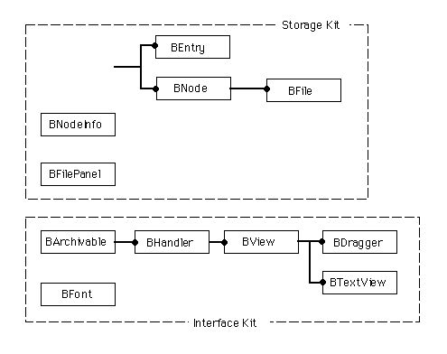
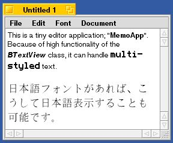
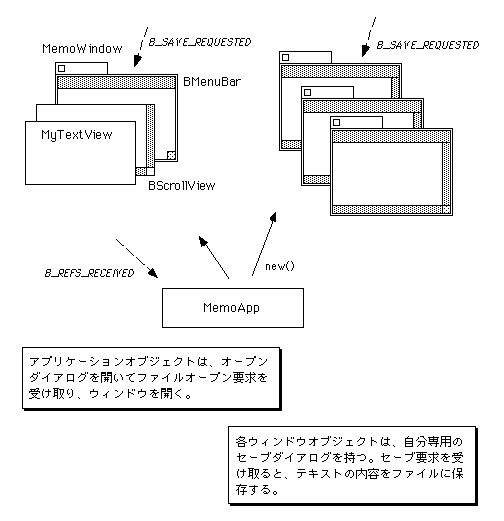
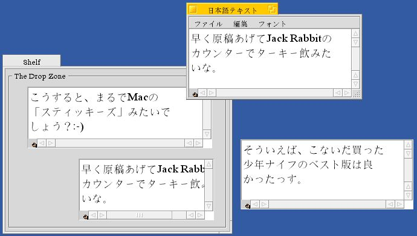
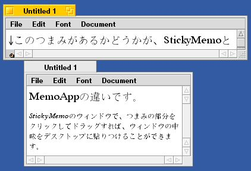
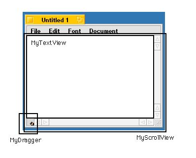

<!DOCTYPE HTML PUBLIC "-//W3C//DTD HTML 4.01 Transitional//EN" "http://www.w3.org/TR/html4/loose.dtd">

<html lang="Ja">
<head>
	<meta http-equiv="content-type" content="text/html; charset=UTF-8"/>
	<title>Art of BeOS Programming</title>
	<link href="../css/format.css" rel="stylesheet" type="text/css">
	<link href="../css/layout.css" rel="stylesheet" type="text/css">
</head>

<body>

<div id="pagewidth">

<div id="main">

<h1>第10章 メモを書いたら貼りつけろ</h1>
<br/>

この章では、基本的なテキストエディタ機能を備えたアプリケーションのサンプルを使い、BeOSのAPIが提供しているテキストエンジンの利用方法を説明します。また、ファイルの読み出しと書き込みのためのプログラミング手順についても解説します。さらに、BeOSの「レプリカント」機構を利用して、テキストエディタ部品だけをウィンドウからドラッグしてコピーし、デスクトップに貼りつけて動かす方法についても解説します。つまり、主な題材として以下のものをとりあげます。<br/>

<br/>

 ◇テキストの表示と編集機能を持つアプリケーションを作る<br/>

 ◇指定されたテキストファイルを開き、その内容を表示する<br/>

 ◇エディタで編集したテキストの内容を、ファイルに保存する<br/>

 ◇エディタに表示するテキストのフォントやサイズを変更する<br/>

 ◇テキストエディタ部品をレプリカント化し、デスクトップに貼りつけられるようにする<br/>

<br/>

以上の題材をプログラミングするために、BeOSのAPIが提供しているクラスのうち、主に以下のものを利用します。<br/>

<br/>

 ●BTextView(Interface Kit)<br/>

 ●BFont(Interface Kit)<br/>

 ●BEntry(Storage Kit)<br/>

 ●BFile(Storage Kit)<br/>

 ●BNodeInfo(Storage Kit)<br/>

 ●BFilePanel(Storage Kit)<br/>

 ●BDragger(Interface Kit)<br/>

<br/>

<br/>

これらのクラスの間の階層関係を、図10.1に示します。<br/>

<br/>

<div id="imagebox">
<div>図[10.1]  第10章で主に扱うクラス間の階層図</div>
</div>

<br/>

プログラミングの説明に使うサンプルアプリケーションは、二つ用意しています。9.1節では、基本的な機能を持つテキストエディタのサンプルを示します。9.3節で、そのアプリケーションをレプリカント対応させ、テキストエディタ部品をデスクトップに貼りつけられるようにしたバージョンを示します。<br/>

<br/>

<br/>
<a name="10.1"></a>
<h2>10.1&nbsp;&nbsp;エディタを作ろう</h2>
この節では、BeOSのAPIが提供しているテキストエンジン、つまりテキストエディタ部品を利用して、テキストエディタのアプリケーションを作る場合のプログラミングを説明します。6.2節でInterface KitのBTextViewクラスを紹介しましたが、これがテキストエディタ部品です。MacOSを始めとして、GUI環境を備えたOSプラットフォームでは、組み込みのテキストエンジンが提供されているのが普通ですが、BeOSでもそれは同じです。これから見るように、テキストエディタを作るのは難しいプログラミングではありません。<br/>

<br/>

10.1.1組み込みのテキストエンジン<br/>

まず、BTextViewクラスが持っているテキストエディタ機能を説明します。BTextViewクラスでは、テキストエンジンとして以下の機能を備えています。<br/>

<br/>

 ■マルチスタイルのテキスト表示<br/>

  テキスト全体を単一のフォントとスタイルで表示するのか、あるいはマルチスタイルで表示するのかを切り替えることができます。当然ながら、MacOSの“TextEdit”のように扱えるテキストデータのサイズが最大32KBまで、といった制限はありません。<br/>

<br/>

 ■ワードラップによる折り返し表示<br/>

  ワードラップを行うかどうかの設定ができます。ワードラップ機能をオンにした場合、テキストを改行表示すべき位置を自動的に計算し、適切な折り返し表示を行ってくれます。<br/>

<br/>

 ■テキストの入力と基本的な編集機能<br/>

  キーボードによるテキスト入力、および基本的な編集操作を行えます。つまり、テキストの選択部分に対するカットとコピー、およびクリア(削除)操作を行うメソッドを持っています。また、ペーストと全体選択を行うメソッドもあります。<br/>

<br/>

  ユーザのキー入力によって生じたメッセージの処理は、BeOSのAPIが提供するアプリケーションフレームワークによって処理されるため、アプリケーション側では何も行う必要がありません。<br/>

<br/>

 ■編集メニュー用のショートカットとクリップボード対応<br/>

  編集メニュー用のショートカットキーの処理も、BeOSのアプリケーションフレームワークによって処理されます。従って、これもアプリケーション側で処理を行う必要はありません。また、システムのクリップボードからテキストをペースト可能かどうかを判定するメソッドが用意されており、それを利用すれば、編集メニュー項目のディム化を制御する処理が簡単になります。<br/>

<br/>

 ■印刷処理への対応<br/>

  BTextViewクラス自体は、特に印刷処理のための機能は持っていません。しかし、BeOSのアプリケーションフレームワークには印刷用の機能も組み込まれています。BViewクラスのDraw()メソッドは、再描画の必要が生じた時に呼び出されるフック関数だと5.2節で説明しましたが、このメソッドは、スクリーンに対する描画だけではなく、印刷のための描画にも使われます。したがって、Draw()メソッドを再定義して描画機能を実装したビュークラスであれば、特に何もしなくても印刷処理を行えます。<br/>

<br/>

この章ではBTextViewクラスを使ったサンプルを示しますが、実は、既に第8章のサンプルでBTextViewを利用しています。8.3節の説明に使った“Scriptor”アプリケーションで利用したBTextControlクラスは、内部にBTextViewクラスのインスタンスを持ち、テキストの表示と入力を任せているのです。Scriptorアプリケーションを動かしてみれば、ウィンドウの入力フィールドに対し、ショートカットキーによるカットやペーストを行えるのが分かるでしょう。これらのショートカットキー入力はBTextViewクラスによって処理されるため、BTextViewを利用する側では何もする必要がないのです。<br/>

<br/>

以上の説明を読むと分かるように、BTextViewクラスはWindowsでいう「リッチテキストボックス」に相当するものです(注10-1)。つまり、MacOSの“TextEdit”よりは高機能なテキストエンジンです。なお、現在のBTextViewクラスでは、日本語フォントで表示を行うように設定すれば日本語テキストの表示が可能ですが、日本語入力機能はサポートされていません。日本語入力用の変換エンジンと通信する機能や、また変換入力のインライン表示機能などは、1998年9月リリース予定のBeOS R4で追加される予定です。<br/>

<br/>

このように、BTextViewクラスによってテキストエンジン機能が提供されていますから、簡単なテキストエディタであれば、いくつかの機能をプログラミングするだけでできてしまいます。以下に、それらの項目について述べます。<br/>

<br/>

 ■テキストデータの保存と読み込み<br/>

  BTextViewを使って入力したテキストデータの内容は、ファイルに保存しない限りアプリケーションを終了すると同時に消えてしまいます。テキストデータをファイルに保存する機能、および保存したテキストデータをファイルから読み込む機能を実装しなければ、エディタとして使うことはできません。<br/>

<br/>

 ■編集メニューの制御とフォントメニューの実装<br/>

  選択部分のカットやコピーなど、テキストに対する編集操作のショートカットキー入力は、BTextViewが処理してくれます。しかし、テキストエディタとして完成させるのであれば、編集メニューをウィンドウに付け、メニュー選択によって同じ編集操作を行えるようにすべきです。また、フォントメニューをウィンドウに付け、テキストを表示するフォントのファミリーとスタイル、サイズなどを設定できるようにする必要もあります。<br/>

<br/>

 ■印刷処理<br/>

  印刷機能も、エディタに求められるものの一つです。BeOSのAPIでは、印刷処理を行うための“BPrintJob”というクラスをInterface Kitに用意しています。このクラスは、2.3節で説明したprint_serverと接続し、描画内容をプリンタに渡してくれます。また、用紙設定や印刷するページの指定を行う設定パネルを開き、ユーザが入力した結果を返すメソッドも備えています。<br/>

<br/>

  BPrintJobクラスを使えば印刷機能を実現できるのですが、本書のサンプルでは印刷処理をとりあげません。その一番の理由は、筆者のオフィスにBeOSによる印刷のテストを行うための環境が整っていないことです。また、BeOSでの印刷処理機能は未だ十分なものではなく、BPrintJobクラスが提供するAPIも今後大きく変更される可能性があると思われるのも、理由の一つです。<br/>

<br/>

10.1.3から説明する“MemoApp”というサンプルアプリケーションでは、上に挙げたもののうち印刷処理以外の項目を実装し、テキストエディタとしての基本機能を実現しています。興味がある人は、このサンプルを参考にして、より完成されたなテキストエディタ作りに挑戦してみて下さい。<br/>

<br/>

なお、単純なテキストエディタではなく、図形や画像データの貼り込みや段組み処理など、本格的な機能を持ったワープロソフトを開発する場合には、BTextViewクラスを利用するよりは、むしろテキストエンジン自体を自分で開発する必要があるでしょう。BTextViewクラスは、基本的なテキスト表示と編集処理に主眼を置いて設計されているものですから、その設計の前提を超えた高度な機能を必要とする場合には、専用のテキストエンジンを開発することを検討すべきです。これは、他のOSプラットフォームに用意されたテキストエンジンの場合でも同様ですね。<br/>

<br/>

<span id="annotate"><dl><dt>(注)10-1</dt><dd>Windows95/NTのリッチテキストボックスにはOLEの埋め込み機能がありますが、BTextViewクラスは、これに相当する機能はありません。</dd></dl></span>
<br/>

10.1.2データの保存と読み込み<br/>

前の章のサンプルアプリケーション(InfoChest)では、テキスト形式のファイルに対して入出力を行うのにANSI標準のファイル操作関数を利用しました。それと同じ関数を使うこともできますが、この章では、BeOSのStorage Kitが提供しているファイル操作APIを利用することにします。BeOSのAPIを使ったプログラミングを解説するのが本書の目的ですし、また、Storage KitのAPIを利用すれば、よりBeOSの機能を活かしたアプリケーションを作れるからです。<br/>

<br/>

ここでは、この章で扱うStorage KitのAPIのうち、中心となる次の二つについて説明します。<br/>

<br/>

 ・BFileクラス<br/>

  9.1節で説明したBNodeのサブクラスで、ファイルの実体を表わしたクラスです。また、データの入出力機能を与えるために、BNodeクラスに加えてSupport KitのBPositionIOクラスも継承しています。ファイルに対する入出力操作を行うときは、このクラスのインスタンスを生成してファイルと関連づけます。<br/>

<br/>

 ・BFilePanelクラス<br/>

  データの保存や読み込みを行う場合に、ユーザがファイルを指定するのに使う標準ダイアログのクラスです。保存用のセーブダイアログと読み込み用のオープンダイアログのどちらにするかを、コンストラクタに渡す引数で指定して切り替えます。<br/>

<br/>

まず、BFileクラスの方から見ていきましょう。上に書いたように、このクラスはファイル実体に格納されたデータにアクセスするためのものです。エントリ情報やパス名を渡してファイルと関連づけると、自動的にファイルを開き、ファイルに対してデータを入出力できるようにしてくれます。ファイル実体との関連づけはコンストラクタまたはSetTo()メソッドで行い、ファイルを開くモードを引数で指定します。開いたファイルは、BFileのインスタンスを解放するか、またはSetTo()メソッドで別のファイルと関連づけると自動的に閉じられます。<br/>

<br/>

ファイルに対するデータの入出力を行うには、Read()メソッドとWrite()メソッドを使います。これらは、親クラスのBPositionIOが仮想関数として定義しているもので、それぞれデータの読み出しと書き込みを行います。BFileクラスを使ってファイルの読み出しと書き込みを行う例を、リスト10.1に示します。<br/>

<br/>

<div id="listbox">
<code>
<span id="sourceH">[リスト10.1] BFileを使ったファイルの読み書き</span><br/><!-- Generator: GNU source-highlight 2.1.2
by Lorenzo Bettini
http://www.lorenzobettini.it
http://www.gnu.org/software/src-highlite -->
<pre><tt>
<font color="#009900">void</font>
<b><font color="#000000">CopyFile </font></b><font color="#990000">(</font><b><font color="#0000FF">const</font></b> <font color="#009900">char</font> srcFilePath<font color="#990000">[</font><font color="#990000">]</font><font color="#990000">,</font> <b><font color="#0000FF">const</font></b> <font color="#009900">char</font> dstFilePath<font color="#990000">[</font><font color="#990000">]</font><font color="#990000">)</font>
<font color="#FF0000">{</font>
    status_t sts<font color="#990000">;</font>
    BFile    srcFile<font color="#990000">,</font> dstFile<font color="#990000">;</font>
    <font color="#009900">char</font>     dataBuf<font color="#990000">[</font><font color="#993399">16</font> <font color="#990000">*</font> <font color="#993399">1024</font><font color="#990000">]</font><font color="#990000">;</font>
    ssize_t  rwBytes<font color="#990000">;</font>
	
    <i><font color="#9A1900">/*</font></i><i><font color="#9A1900"> コピー元のファイルを開く </font></i><i><font color="#9A1900">*/</font></i>
    sts <font color="#990000">=</font> srcFile<font color="#990000">.</font><b><font color="#000000">SetTo</font></b><font color="#990000">(</font>srcFilePath<font color="#990000">,</font> B_READ_ONLY<font color="#990000">)</font><font color="#990000">;</font>
    <b><font color="#0000FF">if</font></b> <font color="#990000">(</font>sts <font color="#990000">!</font><font color="#990000">=</font> B_OK<font color="#990000">)</font>
        <b><font color="#000000">DoError</font></b><font color="#990000">(</font>sts<font color="#990000">)</font><font color="#990000">;</font>  <i><font color="#9A1900">/*</font></i><i><font color="#9A1900"> エラー処理 </font></i><i><font color="#9A1900">*/</font></i>
	
    <i><font color="#9A1900">/*</font></i><i><font color="#9A1900"> コピー先のファイルを作って開く </font></i><i><font color="#9A1900">*/</font></i>
    sts <font color="#990000">=</font> dstFile<font color="#990000">.</font><b><font color="#000000">SetTo</font></b><font color="#990000">(</font>dstFilePath<font color="#990000">,</font> B_WRITE_ONLY<font color="#990000">|</font>B_CREATE_FILE<font color="#990000">)</font><font color="#990000">;</font>
    <b><font color="#0000FF">if</font></b> <font color="#990000">(</font>sts <font color="#990000">!</font><font color="#990000">=</font> B_OK<font color="#990000">)</font>
        <b><font color="#000000">DoError</font></b><font color="#990000">(</font>sts<font color="#990000">)</font><font color="#990000">;</font>  <i><font color="#9A1900">/*</font></i><i><font color="#9A1900"> エラー処理 </font></i><i><font color="#9A1900">*/</font></i>
	
    <i><font color="#9A1900">/*</font></i><i><font color="#9A1900"> ファイル内容のコピーを実行 </font></i><i><font color="#9A1900">*/</font></i>
    <b><font color="#0000FF">while</font></b> <font color="#990000">(</font><font color="#990000">(</font>rwBytes <font color="#990000">=</font> srcFile<font color="#990000">.</font><b><font color="#000000">Read</font></b><font color="#990000">(</font>dataBuf<font color="#990000">,</font> <b><font color="#0000FF">sizeof</font></b><font color="#990000">(</font>dataBuf<font color="#990000">)</font><font color="#990000">)</font><font color="#990000">)</font> <font color="#990000">&gt;</font> <font color="#993399">0</font><font color="#990000">)</font> <font color="#FF0000">{</font>
        <font color="#990000">(</font><font color="#009900">void</font><font color="#990000">)</font>dstFile<font color="#990000">.</font><b><font color="#000000">Write</font></b><font color="#990000">(</font>dataBuf<font color="#990000">,</font> rwBytes<font color="#990000">)</font><font color="#990000">;</font>
    <font color="#FF0000">}</font>
	
    <b><font color="#0000FF">return</font></b><font color="#990000">;</font>
<i><font color="#9A1900">/*</font></i>
<i><font color="#9A1900"> * 注意:“srcFile”と“dstFile”に関連づけられた二つのファイルは、この手続</font></i>
<i><font color="#9A1900"> *    きの呼び出しが終了してsrcFileとdstFileが解放されるとき、BFileクラス</font></i>
<i><font color="#9A1900"> *    のデストラクタによって閉じられる。BFileクラスには、ファイルのオープ</font></i>
<i><font color="#9A1900"> *    ンやクローズだけを行うメソッドはない。ファイルのオープンとクローズは、</font></i>
<i><font color="#9A1900"> *    コンストラクタとデストラクタ、およびSetTo()メソッドの中で行われる。</font></i>
<i><font color="#9A1900"> </font></i><i><font color="#9A1900">*/</font></i>
<font color="#FF0000">}</font>

</tt></pre>
</code>
</div>

<br/>

リスト10.1では、パス名で指定された二つのファイルを開き、一方の内容を他方にコピーします。コピー元のファイルを開くときは、BFileクラスのSetTo()メソッドに“B_READ_ONLY”を渡し、リードオンリー・モードを指定しています(注10-2)。また、コピー先のファイルを開くときは、“B_WRITE_ONLY”と“B_CREATE_FILE”を組み合わせたものを渡し、ファイルを作ったうえでライトオンリー・モードで開くように指定しています。SetTo()メソッドによってファイル実体をBFileオブジェクトと関連づけ、ファイルを開くのに成功したら、Read()メソッドでコピー元のファイルからデータを読み出し、それをWrite()メソッドでコピー先のファイルに書き込んでいます。<br/>

<br/>

この例では、コピー用の中間バッファを用意してファイルのデータを一部ずつ読み出しています。すべてのデータを一度に読み出す必要がある場合には、Seek()メソッドを利用してファイルのサイズを調べ、それと同じ大きさの領域を確保すればよいでしょう。BFileクラスの各メソッドの詳細については、APIリファレンスでStorage Kitの章を参照して下さい。<br/>

<br/>

次は、BFilePanelクラスです。このクラスは、セーブダイアログにもオープンダイアログにも使える便利なものですが、一つ注意すべきことがあります。これらのダイアログ、すなわちファイルパネルを使ってユーザが指定したファイルの情報は、メッセージによって通知されるのです。つまり、メソッドの戻り値として返されるのではありません。したがって、データの保存や読み込みを行うファイルをユーザに指定してもらう場合は、まずファイルパネルを開き、それからメッセージが届くのを待つようにプログラミングする必要があります。以下に、ファイルパネルを開いてファイルを指定してもらうための手順を示します。<br/>

<br/>

(1)データを保存する場合(セーブダイアログ)<br/>

 1.)BFilePanelクラスのコンストラクタに、パネル種類として“B_SAVE_PANEL”を渡してインスタンスを生成する。これで、セーブダイアログが作られる。<br/>

<br/>

 2.)BFilePanelクラスのShow()メソッドを呼び出し、セーブダイアログを表示する。<br/>

<br/>

 3.)ユーザがセーブダイアログを使って保存先を指定すると、あらかじめ設定した送り先(ターゲット)に“B_SAVE_REQUESTED”メッセージが送られる。ターゲットの設定はBFilePanelクラスのSetTarget()メソッドで行うか、またはコンストラクタの引数で指定する。何も設定しなかった場合は、アプリケーションオブジェクトにメッセージが送られる。<br/>

<br/>

 4.)B_SAVE_REQUESTEDメッセージには、保存先のファイルを置くディレクトリのエントリ情報と、ファイルの名前が付随データとして格納されている。この二つの項目で指定されたファイルを開き、データを保存する。<br/>

<br/>

(2)データを読み込む場合(オープンダイアログ)<br/>

 1.)BFilePanelクラスのコンストラクタに、パネル種類として“B_OPEN_PANEL”を渡してインスタンスを生成する。これで、オープンダイアログが作られる。<br/>

<br/>

 2.)BFilePanelクラスのShow()メソッドを呼び出し、オープンダイアログを表示する。<br/>

<br/>

 3.)ユーザがオープンダイアログを使ってファイルを指定すると、あらかじめ設定したターゲットに“B_REFS_RECEIVED”メッセージが送られる。ターゲットの設定はセーブダイアログの場合と同様。なお、アプリケーションオブジェクトがB_REFS_RECEIVEDを受け取った場合、BApplicationクラスがフック関数として提供しているRefsReceived()メソッドが呼び出される。<br/>

<br/>

 4.)B_REFS_RECEIVEDメッセージには、開くべきファイルのエントリ情報が付随データとして格納されている。エントリ情報で指定されたファイルを開き、データを読み込む。なお、オープンダイアログで複数のファイルを指定すると、複数のエントリ情報が渡される。メッセージに格納された全てのエントリ情報を取り出し、指定された全てのファイルについてデータの読み込み処理を行う。<br/>

<br/>

このように、ファイルパネルの使い方は単純です。とはいえ、その背後には少しばかり複雑な問題が隠れています。3.1節で、BeOSのファイルパネはモーダル動作しないのが普通だと述べました。これは、ファイルパネルを開いている間も他のウィンドウを操作できるということです。たとえば、ユーザがテキストエディタのウィンドウを閉じようとした時に、編集結果を保存するかどうかを問い合わせ、セーブダイアログを開いたとしましょう。セーブダイアログがモーダル動作するのであれば、それを開いている間は他のウィンドウを操作できませんから、テキストエディタのアプリケーション側ではダイアログに対するユーザの応答を待つだけです。しかし、モーダル動作しないとなると、セーブダイアログを開いているにも拘わらず他のウィンドウを操作できるのです。ウィンドウのメニューから「ファイルを開く」を選択したり、それどころか、もう一度ウィンドウを閉じようとすることすらできてしまいます。<br/>

<br/>

この状況は、一見無茶苦茶で解決の手段がないように思えます。しかし、実はそうでもありません。メッセージ応答の処理さえ正しくプログラミングしていれば、たとえファイルパネルがモーダル動作しなくても、けっして難しいことにはならないのです。<br/>

<br/>

以下に、ファイルパネルを利用するうえで気をつけるべきことや、利用の仕方を述べます。これは一種の定石として示すものであり、必ず守らなければいけないものではありません。ファイルパネルについて理解してしまったら、これを踏台にして自分なりの定石を考えてみるのがよいでしょう。また、この章の説明に使うテキストエディタのサンプル(MemoApp)でも以下の定石を採用していますので、ソースコードを読む際の参考にしてみて下さい。<br/>

<br/>

 ■ファイルパネルのポインタを保管する<br/>

  ファイルパネルが閉じられても、BFilePanelオブジェクトは解放されません。また、ファイルパネルのウィンドウも解放されず、単に画面から隠されるだけです。したがって、BFilePanelオブジェクトを生成したらポインタを保管しておき、不要になった時点で解放する必要があります。<br/>

<br/>

  なお、ファイルパネルが閉じられたら直ちにBFilePanelオブジェクトを解放するよりも、画面から隠したままとっておいて再利用する方が便利です。そうすれば、ファイルパネルの状態がそのまま保存され、再び表示する時にそれを復元する手間が省けるからです。ファイルパネルはリサイズできるので、その状態を保存しておけるのは、ユーザにとって便利です。<br/>

<br/>

  画面から隠されたファイルパネルを再び表示するには、BFilePanelオブジェクトに対してShow()メソッドを呼び出します。また、ファイルパネルが画面に表示されているかどうかを調べるにはIsShowing()メソッドを使います。<br/>

<br/>

 ■オープンダイアログはアプリケーションに一つ<br/>

  次に述べるセーブダイアログととは違い、オープンダイアログ用のBFilePanelオブジェクトは一つしか生成しないようにします。つまり、オープンダイアログを表示している時に“File”メニューの“Open”が選択されたら、オープンダイアログをもう一枚開くのではなく、既に表示しているダイアログを最前面に出すようにします。特に、テキストエディタのようにファイルとウィンドウが一対一に結び付く「ドキュメント処理」タイプのアプリケーションでは、そうする方がユーザにとっても自然です。それらのアプリケーションでは、オープンダイアログは特定の「ドキュメント」ウィンドウと結び付くものではなく、むしろ、新たにウィンドウを開くための道具として働くからです。<br/>

<br/>

  また、オープンダイアログをアプリケーションクラスのデータメンバとして持たせ、メッセージの送り先(ターゲット)もアプリケーションオブジェクトに設定しておくと便利です。BApplicationクラスでは、オープンダイアログが送ってくるB_REFS_RECEIVEDメッセージを受け取ると、フック関数のRefsReceived()メソッドを呼び出します。実は、アプリケーションのアイコンにファイルのアイコンをドラッグ&ドロップした時も、これと同じメッセージが送られます。したがって、オープンダイアログでファイルを開く処理と、アプリケーションのアイコンに対するドラッグ&ドロップによってファイルを開く処理とが自然に共通化されるのです(注10-3)。<br/>

<br/>

 ■セーブダイアログはウィンドウごとに一つ<br/>

  テキストエディタのような「ドキュメント処理」タイプのアプリケーションでは、それぞれのウィンドウにセーブダイアログ用のBFilePanelオブジェクトを持たせます。つまり、セーブダイアログを表示している時に、別のウィンドウで“File”メニューの“Save”が選択されたら、もう一枚セーブダイアログを開くのです。ただし、既にセーブダイアログを開いたウィンドウに対してもう一度同じ操作が行われたら、そのダイアログを最前面に出すだけです。<br/>

<br/>

  また、オープンダイアログをアプリケーションクラスのデータメンバとして持たせるのに対し、セーブダイアログはウィンドウクラスのデータメンバにします。もちろん、ターゲットもウィンドウオブジェクトに設定しておきます。セーブダイアログで指定されたファイルに保存すべきデータを知っているのは、それぞれのウィンドウオブジェクトです。したがって、ウィンドウオブジェクトにメッセージを送って保存処理を行わせるようにする方が、プログラミングが自然になります。<br/>

<br/>

<span id="annotate"><dl><dt>(注)10-2</dt><dd>“B_WRITE_ONLY”や“B_CREATE_FILE”は<storage/StorageDefs.h>で定義されているもので、POSIX APIのファイルオープンモードに対する別名です。つまり、“O_WRONLY”や“O_CREAT”と同じです。</dd></dl></span>
<br/>

<span id="annotate"><dl><dt>(注)10-3</dt><dd>9.3節の説明に使った“InfoChest”アプリケーションでは、ドキュメント一覧ウィンドウにファイルをドラッグ&ドロップした場合と、オープンダイアログでファイルを選択した場合の応答処理を共通化しています。このため、ドキュメント一覧ウィンドウのビューオブジェクト(DocumentsView)をオープンダイアログのターゲットにしています。</dd></dl></span>
<br/>

10.1.3MemoAppが利用するAPI<br/>

テキストエディタのサンプルアプリケーションについて説明する前に、それが利用している主なAPIを紹介しておきます。最も中心となるBTextViewクラス、およびBFileクラスとBFilePanelクラスについては既に説明しましたが、それ以外のクラスと合わせ、ここでまとめておくことにします。<br/>

<br/>

先にStorage Kitのクラスを見ておきます。この節のサンプル(MemoApp)では、主に以下のクラスを利用しています。<br/>

<br/>

 ■BFile<br/>

  テキストデータの保存と読み込みを行うのに使っています。データの保存は10.1.2で説明したようにWrite()メソッドを使って行いますが、テキストデータを読み込む処理は、BTextViewクラスに任せています。<br/>

<br/>

 ■BNodeInfo<br/>

  テキストファイルに対し、ファイルタイプ属性の取得と設定を行うのに利用しています。ファイルタイプ属性というのは、3.4節で説明したようにファイルタイプ情報を格納したノード属性のことです。テキストファイルを作成してデータを保存する際、ファイルタイプ属性を設定するのに利用しています。また、オープンダイアログに表示するエントリをフィルタリングする処理で、指定されたエントリのファイルタイプ属性を取得するのに利用しています。<br/>

<br/>

 ■BDirectory<br/>

  BFileと同じくBNodeクラスを継承しており、ディレクトリの実体を表わしたクラスです。保存先のファイル情報を受け取った際、ファイル名と合わせてファイルのエントリ情報を作成するのに利用しています。<br/>

<br/>

 ■BFilePanel<br/>

  先ほど説明した通り、ファイルパネルのクラスです。MemoAppでは、オープンダイアログをアプリケーションクラスに持たせる一方、セーブダイアログはウィンドウクラスに持たせています。これは、先ほど述べた「定石」の通りです。<br/>

<br/>

 ■BRefFilter<br/>

  ファイルパネルと連携して動作するクラスです。ファイルパネルがエントリを一覧表示する際に、表示したくないエントリをふるい落とすためのフィルタリングに使います。このクラスは、フィルタ関数として働く仮想メンバ関数を定義しただけの純仮想クラスなので、サブクラスを実装しないと使えません。MemoAppでは、テキストファイルだけを通過させる“MyTextRefFilter”というサブクラスを実装しています。<br/>

<br/>

次はInterface Kitの方です。MemoAppでは、主に以下のクラスを利用しています。<br/>

<br/>

 ■BTextView<br/>

  10.1.1で説明した通り、テキストエンジン機能を提供するクラスです。<br/>

<br/>

 ■BFont<br/>

  フォントを扱うためのクラスです。フォントのファミリーとスタイル、およびサイズなど、フォントの属性情報をデータメンバに持ちます。BTextViewに表示するテキストのフォントを設定するには、表示に使うフォント属性をBFontオブジェクトにセットし、それをBTextViewクラスのSetFontAndColor()メソッドの引数に渡します。<br/>

<br/>

 ■BScreen<br/>

  解像度や画面サイズなど、スクリーン情報にアクセスするためのクラスです。MemoAppでは、スクリーンサイズを取得するのに利用しています。MemoAppでは、新しくウィンドウを開くごとに表示位置を右下にずらしていくのですが、ウィンドウがスクリーンからはみ出ししてしまい、見えなくなってしまわないように、スクリーンのフレーム矩型とウィンドウの位置関係を調べ、必要な場合はウィンドウを開く位置を補正します。<br/>

<br/>

以上が、MemoAppアプリケーションで利用している主なAPIです。次に、BFontクラスを使ってBTextViewの表示フォントを設定する手順を説明します。以下は、表示フォントのファミリーとスタイル、およびサイズを設定するための手順です。<br/>

<br/>

 1.)BFontクラスのインスタンスを生成する。<br/>

<br/>

 2.)生成したBFontオブジェクトに対してSetFontAndFamily()メソッドを呼び出し、表示に使うフォントファミリーの名前とスタイル名をセットする。<br/>

<br/>

 3.)続けてSetSize()メソッドを呼び出し、表示に使うフォントサイズをセットする。<br/>

<br/>

 4.)必要なフォント属性をセットし終わったら、BTextViewオブジェクトに対してSetFontAndColor()メソッドを呼び出し、そのBFontオブジェクトを渡す。なお、SetFontAndColor()には、BFontオブジェクトの他にフォント設定を変更するテキストの範囲を示すオフセット値を渡さなければならない。<br/>

<br/>

具体例を見るために、現在選択されている部分のテキストのフォントを、“Bitstream Cyberbit”ファミリーの“Roman”スタイルに変更する場合について、リスト10.2にコーディング例を示します。<br/>

<br/>

<div id="listbox">
<code>
<span id="sourceH">[リスト10.2] BTextViewに対するフォントの設定例</span><br/><!-- Generator: GNU source-highlight 2.1.2
by Lorenzo Bettini
http://www.lorenzobettini.it
http://www.gnu.org/software/src-highlite -->
<pre><tt>    BTextView<font color="#990000">*</font> theTextView <font color="#990000">=</font> <b><font color="#000000">GetTextView</font></b><font color="#990000">(</font><font color="#990000">)</font><font color="#990000">;</font>  <i><font color="#9A1900">/*</font></i><i><font color="#9A1900"> BTextViewを取得 </font></i><i><font color="#9A1900">*/</font></i>
    BFont      theFont<font color="#990000">;</font>
    int32      selStart<font color="#990000">,</font> selEnd<font color="#990000">;</font>
	
    <i><font color="#9A1900">/*</font></i><i><font color="#9A1900"> 選択部分のオフセット値を取得 </font></i><i><font color="#9A1900">*/</font></i>
    theTextView<font color="#990000">-</font><font color="#990000">&gt;</font><b><font color="#000000">GetSelection</font></b><font color="#990000">(</font><font color="#990000">&amp;</font>selStart<font color="#990000">,</font> <font color="#990000">&amp;</font>selEnd<font color="#990000">)</font><font color="#990000">;</font>
	
    <i><font color="#9A1900">/*</font></i><i><font color="#9A1900"> 設定するフォントファミリーとスタイルをBFontにセット </font></i><i><font color="#9A1900">*/</font></i>
    theFont<font color="#990000">.</font><b><font color="#000000">SetFamilyAndStyle</font></b><font color="#990000">(</font><font color="#FF0000">"Bitstream Cyberbit"</font><font color="#990000">,</font> <font color="#FF0000">"Roman"</font><font color="#990000">)</font><font color="#990000">;</font>
	
    <i><font color="#9A1900">/*</font></i><i><font color="#9A1900"> 選択部分のフォントを変更 </font></i><i><font color="#9A1900">*/</font></i>
    theTextView<font color="#990000">-</font><font color="#990000">&gt;</font><b><font color="#000000">SetFontAndColor</font></b><font color="#990000">(</font>selStart<font color="#990000">,</font> selEnd<font color="#990000">,</font> <font color="#990000">&amp;</font>theFont<font color="#990000">,</font> B_FONT_FAMILY_AND_STYLE<font color="#990000">)</font><font color="#990000">;</font>
</tt></pre>
</code>
</div>

<br/>

リスト10.2では、BTextViewクラスのGetSelection()メソッドを使ってテキストの選択範囲を調べています。テキスト全体のフォントを変更する場合は、変更する範囲として0からテキストの終わりまでを指定するだけです。テキストの終わりを示すオフセットは、TextLength()の戻り値によって与えられます。ただし、BTextViewオブジェクトをモノスタイル・モードで動かしている場合には、指定した範囲だけを変更することはできず、テキスト全体のフォントが変わってしまいます。マルチスタイル・モードで動かすためには、前もってSetStylable()メソッドを呼び出しておく必要があるので注意して下さい。<br/>

<br/>

なお、選択部分のテキストに関するフォントの取得や設定を行う場合は、GetFondAndColor()とSetFontAndColor()にオフセット値を渡さなくても構いません。この二つのメソッドは多重定義されており、オフセット値を受け取らないバージョンでは、選択部分のテキストに対して働くからです。詳細は、APIリファレンスを参照して下さい。<br/>

<br/>

さて、リスト10.2では、フォントファミリーに"Bitstream Cyberbit"を指定しています。これは第1章で紹介した日本語フォントですから、選択部分のテキストが日本語であれば、日本語が表示されるはずです。すぐ後で示すMemoAppアプリケーションのスクリーンショットでは、このフォントを使って日本語を表示しています。<br/>

<br/>

10.1.4MemoAppの外部仕様とモジュール構成<br/>

サンプルアプリケーションに関する説明の手始めとして、その外部使仕様、つまりユーザに提供する機能を述べます。図10.2が、これから説明する“MemoApp”という名前のサンプルを動かした様子です。<br/>

<br/>

<div id="imagebox">
<div>図[10.2]  MemoAppのスクリーンショット</div>
</div>

<br/>

このアプリケーションの大まかな外部仕様は、以下の通りです。<br/>

<br/>

 ・テキスト編集機能を持ったウィンドウを開き、オープンダイアログで指定したテキストファイルの内容を表示する。また、アプリケーションのアイコンにテキストファイルのアイコンをドラッグ&ドロップしても、同じように開くことができる。<br/>

<br/>

 ・編集した結果のテキストデータを、指定したファイルにセーブする。<br/>

<br/>

 ・表示したテキストの選択部分に対し、フォントメニューで指定したフォントファミリーやフォントサイズを設定できる。<br/>

<br/>

 ・ウィンドウをリサイズすると、それに合わせてテキストの折り返し表示幅を変更するモードで動かすことができる。<br/>

<br/>

この外部仕様と図10.2のスクリーンショットだけではMemoAppアプリケーションの動きが分からない場合は、実際に動かしてみて下さい。MemoAppのソースファイルは、付録に付けたサンプルコード集の“10.1_MemoApp”というフォルダに入っています。このアプリケーションの機能は、テキストエディタとして一般的なものであり、BeOS付属の“StyledEdit”とよく似ています。ですから、操作手順については特に説明しません。実は、StyledEditを真似て作ったのがMemoAppなのです。実際に動かしてみれば、印刷など一部の機能が削られていることを除き、だいたい同じようなものだということが分かるでしょう。<br/>

<br/>

MemoAppアプリケーションの動きが分かったら、次はその内部を見てみましょう。図10.3に、MemoAppのモジュール構成を示します。<br/>

<br/>

<div id="imagebox">
<div>図[10.3]  MemoAppのモジュール構成</div>
</div>

<br/>

以下に、図10.3に示したクラスの概要を述べます。<br/>

<br/>

 ■MemoApp<br/>

  MemoAppのアプリケーションクラス。テキスト編集ウィンドウの管理を行います。また、オープンダイアログ用のファイルパネルオブジェクト(BFilePanel)を内部に持ち、ユーザのメニュー操作に応じて開きます。また、オープンダイアログで指定されたテキストファイルの内容を読み出し、テキスト編集ウィンドウを開いて表示します。<br/>

<br/>

 ■MemoWindow<br/>

  テキスト編集ウィンドウのクラス。自分に貼りつけたテキストビュー(BTextViewオブジェクト)と連携し、編集メニューやフォントメニューに対するユーザの操作に応答します。つまり、ユーザのメニュー操作に応じてテキストビューのメソッドを呼び出し、必要な処理を行います。また、テキストデータの内容をファイルに保存する機能を持ちます。保存すべきファイルが存在していない場合には、内部に持つセーブダイアログを開いて保存先の指定をユーザから受け取ります。<br/>

<br/>

 ■MyTextView<br/>

  BTextViewのサブクラス。ユーザの入力操作によって、表示しているテキストの内容に変更が生じた場合は、内部のフラグにそのことを記録します。MemoWindowクラスは、このフラグにアクセスしてテキストの状態を知り、ファイルメニューの項目の状態を制御します。また、ウィンドウのリサイズによって自分の大きさが変わったとき、それに合わせてテキストの折り返し表示幅を調節する機能を持っています。<br/>

<br/>

10.1.5MemoAppのソースコード<br/>

リスト10.3～8に、MemoAppアプリケーションを構成するクラスのうち、MemoAppとMemoWindow、およびMyRefFilterのソースを示します。<br/>

<br/>

<div id="listbox">
<code>
<span id="sourceH">[リスト10.3] MyTextRefFilter</span><br/><!-- Generator: GNU source-highlight 2.1.2
by Lorenzo Bettini
http://www.lorenzobettini.it
http://www.gnu.org/software/src-highlite -->
<pre><tt><i><font color="#9A1900">/*</font></i><i><font color="#9A1900"> テキストファイル用のフィルタクラス </font></i><i><font color="#9A1900">*/</font></i>
<b><font color="#0000FF">class</font></b> MyTextRefFilter <font color="#990000">:</font> <b><font color="#0000FF">public</font></b> BRefFilter <font color="#FF0000">{</font>
<b><font color="#0000FF">public</font></b><font color="#990000">:</font>
    <font color="#009900">bool</font>	<b><font color="#000000">Filter</font></b><font color="#990000">(</font><b><font color="#0000FF">const</font></b> entry_ref<font color="#990000">*</font><font color="#990000">,</font> BNode<font color="#990000">*</font><font color="#990000">,</font> <b><font color="#0000FF">struct</font></b> stat<font color="#990000">*</font><font color="#990000">,</font>
            <b><font color="#0000FF">const</font></b> <font color="#009900">char</font><font color="#990000">*</font> mimetype<font color="#990000">)</font><font color="#990000">;</font>
<font color="#FF0000">}</font><font color="#990000">;</font>

<i><font color="#9A1900">/*</font></i>
<i><font color="#9A1900"> * MyTextRefFilterのフィルタ関数;</font></i>
<i><font color="#9A1900"> </font></i><i><font color="#9A1900">*/</font></i>
<font color="#009900">bool</font>
MyTextRefFilter<font color="#990000">:</font><font color="#990000">:</font><b><font color="#000000">Filter </font></b><font color="#990000">(</font><b><font color="#0000FF">const</font></b> entry_ref<font color="#990000">*</font> ref<font color="#990000">,</font> BNode<font color="#990000">*</font> <i><font color="#9A1900">/*</font></i><i><font color="#9A1900"> node </font></i><i><font color="#9A1900">*/</font></i><font color="#990000">,</font>
    <b><font color="#0000FF">struct</font></b> stat<font color="#990000">*</font> <i><font color="#9A1900">/*</font></i><i><font color="#9A1900"> st </font></i><i><font color="#9A1900">*/</font></i><font color="#990000">,</font> <b><font color="#0000FF">const</font></b> <font color="#009900">char</font><font color="#990000">*</font> mimetype<font color="#990000">)</font>
<font color="#FF0000">{</font>
    BEntry		<b><font color="#000000">theEntry</font></b><font color="#990000">(</font>ref<font color="#990000">,</font> <b><font color="#0000FF">true</font></b><font color="#990000">)</font><font color="#990000">;</font>  <i><font color="#9A1900">/*</font></i><i><font color="#9A1900"> シンボリックリンクを解決 </font></i><i><font color="#9A1900">*/</font></i>
    BMimeType	<b><font color="#000000">theType</font></b><font color="#990000">(</font>mimetype<font color="#990000">)</font><font color="#990000">;</font>
    entry_ref	orgRef<font color="#990000">;</font>

    <i><font color="#9A1900">/*</font></i><i><font color="#9A1900"> ディレクトリは通す </font></i><i><font color="#9A1900">*/</font></i>	
    <b><font color="#0000FF">if</font></b> <font color="#990000">(</font>theEntry<font color="#990000">.</font><b><font color="#000000">IsDirectory</font></b><font color="#990000">(</font><font color="#990000">)</font><font color="#990000">)</font>
        <b><font color="#0000FF">return</font></b> <b><font color="#0000FF">true</font></b><font color="#990000">;</font>

    <i><font color="#9A1900">/*</font></i><i><font color="#9A1900"> シンボリックリンクが指す先のファイルタイプ情報を取得 </font></i><i><font color="#9A1900">*/</font></i>
<i><font color="#9A1900">//</font></i><i><font color="#9A1900">  (void)theEntry.GetRef(&amp;orgRef);</font></i>
    <b><font color="#0000FF">if</font></b> <font color="#990000">(</font>theEntry<font color="#990000">.</font><b><font color="#000000">GetRef</font></b><font color="#990000">(</font><font color="#990000">&amp;</font>orgRef<font color="#990000">)</font> <font color="#990000">!</font><font color="#990000">=</font> B_OK<font color="#990000">)</font> <font color="#FF0000">{</font>  <i><font color="#9A1900">/*</font></i><i><font color="#9A1900"> for R3's symbolick link </font></i><i><font color="#9A1900">*/</font></i>
        orgRef <font color="#990000">=</font> <font color="#990000">*</font>ref<font color="#990000">;</font>
    <font color="#FF0000">}</font>
    <b><font color="#0000FF">if</font></b> <font color="#990000">(</font>orgRef <font color="#990000">!</font><font color="#990000">=</font> <font color="#990000">*</font>ref<font color="#990000">)</font> <font color="#FF0000">{</font>
        <font color="#009900">char</font>		orgType<font color="#990000">[</font>B_MIME_TYPE_LENGTH<font color="#990000">]</font><font color="#990000">;</font>
        BNode		<b><font color="#000000">orgNode</font></b><font color="#990000">(</font><font color="#990000">&amp;</font>orgRef<font color="#990000">)</font><font color="#990000">;</font>
        BNodeInfo	<b><font color="#000000">orgNodeInfo</font></b><font color="#990000">(</font><font color="#990000">&amp;</font>orgNode<font color="#990000">)</font><font color="#990000">;</font>
		
        <font color="#990000">(</font><font color="#009900">void</font><font color="#990000">)</font>orgNodeInfo<font color="#990000">.</font><b><font color="#000000">GetType</font></b><font color="#990000">(</font>orgType<font color="#990000">)</font><font color="#990000">;</font>
        <font color="#990000">(</font><font color="#009900">void</font><font color="#990000">)</font>theType<font color="#990000">.</font><b><font color="#000000">SetTo</font></b><font color="#990000">(</font>orgType<font color="#990000">)</font><font color="#990000">;</font>
    <font color="#FF0000">}</font>

    <i><font color="#9A1900">/*</font></i><i><font color="#9A1900"> "text"タイプのファイルは全て通す </font></i><i><font color="#9A1900">*/</font></i>
    <b><font color="#0000FF">if</font></b> <font color="#990000">(</font><b><font color="#000000">strcmp</font></b><font color="#990000">(</font>theType<font color="#990000">.</font><b><font color="#000000">Type</font></b><font color="#990000">(</font><font color="#990000">)</font><font color="#990000">,</font> <font color="#FF0000">"text"</font><font color="#990000">)</font> <font color="#990000">=</font><font color="#990000">=</font> <font color="#993399">0</font><font color="#990000">)</font>
        <b><font color="#0000FF">return</font></b> <b><font color="#0000FF">true</font></b><font color="#990000">;</font>
    <b><font color="#0000FF">else</font></b> <font color="#FF0000">{</font>
        BMimeType	theSuperType<font color="#990000">;</font>
		
        <b><font color="#0000FF">if</font></b> <font color="#990000">(</font>theType<font color="#990000">.</font><b><font color="#000000">GetSupertype</font></b><font color="#990000">(</font><font color="#990000">&amp;</font>theSuperType<font color="#990000">)</font> <font color="#990000">=</font><font color="#990000">=</font> B_OK
                <font color="#990000">&amp;</font><font color="#990000">&amp;</font> <b><font color="#000000">strcmp</font></b><font color="#990000">(</font>theSuperType<font color="#990000">.</font><b><font color="#000000">Type</font></b><font color="#990000">(</font><font color="#990000">)</font><font color="#990000">,</font> <font color="#FF0000">"text"</font><font color="#990000">)</font> <font color="#990000">=</font><font color="#990000">=</font> <font color="#993399">0</font><font color="#990000">)</font>
            <b><font color="#0000FF">return</font></b> <b><font color="#0000FF">true</font></b><font color="#990000">;</font>
    <font color="#FF0000">}</font>
	
    <b><font color="#0000FF">return</font></b> <b><font color="#0000FF">false</font></b><font color="#990000">;</font>
<font color="#FF0000">}</font>
</tt></pre>
</code>
</div>

<div id="listbox">
<code>
<span id="sourceH">[リスト10.4] MemoApp.h</span><br/><!-- Generator: GNU source-highlight 2.1.2
by Lorenzo Bettini
http://www.lorenzobettini.it
http://www.gnu.org/software/src-highlite -->
<pre><tt><b><font color="#000080">#ifndef</font></b> _MEMO_APP_H_
<b><font color="#000080">#define</font></b> _MEMO_APP_H_

<b><font color="#000080">#include</font></b> <font color="#FF0000">&lt;app/Application.h&gt;</font>

<i><font color="#9A1900">/*</font></i><i><font color="#9A1900"> 関連クラス・構造体 </font></i><i><font color="#9A1900">*/</font></i>
<b><font color="#0000FF">class</font></b>	MemoWindow<font color="#990000">;</font>
<b><font color="#0000FF">class</font></b>	BAlert<font color="#990000">;</font>
<b><font color="#0000FF">class</font></b>	BFilePanel<font color="#990000">;</font>
<b><font color="#0000FF">class</font></b>	BRefFilter<font color="#990000">;</font>


<i><font color="#9A1900">/*</font></i>
<i><font color="#9A1900"> * MemoAppクラスの定義</font></i>
<i><font color="#9A1900"> </font></i><i><font color="#9A1900">*/</font></i>
<b><font color="#0000FF">class</font></b> MemoApp <font color="#990000">:</font> <b><font color="#0000FF">public</font></b> BApplication <font color="#FF0000">{</font>
<i><font color="#9A1900">//</font></i><i><font color="#9A1900"> メソッド</font></i>
<b><font color="#0000FF">public</font></b><font color="#990000">:</font>
    <i><font color="#9A1900">//</font></i><i><font color="#9A1900"> 初期化と解放</font></i>
    <b><font color="#000000">MemoApp</font></b><font color="#990000">(</font><font color="#009900">void</font><font color="#990000">)</font><font color="#990000">;</font>
    <font color="#990000">~</font><b><font color="#000000">MemoApp</font></b><font color="#990000">(</font><font color="#009900">void</font><font color="#990000">)</font><font color="#990000">;</font>

<b><font color="#0000FF">private</font></b><font color="#990000">:</font>
    <i><font color="#9A1900">//</font></i><i><font color="#9A1900"> 起動・終了時処理</font></i>
    <font color="#009900">void</font>	<b><font color="#000000">ReadyToRun</font></b><font color="#990000">(</font><font color="#009900">void</font><font color="#990000">)</font><font color="#990000">;</font>
	
    <i><font color="#9A1900">//</font></i><i><font color="#9A1900"> メッセージ応答</font></i>
    <font color="#009900">void</font>	<b><font color="#000000">MessageReceived</font></b><font color="#990000">(</font>BMessage<font color="#990000">*</font> message<font color="#990000">)</font><font color="#990000">;</font>
    <font color="#009900">void</font>	<b><font color="#000000">RefsReceived</font></b><font color="#990000">(</font>BMessage<font color="#990000">*</font> message<font color="#990000">)</font><font color="#990000">;</font>
    <font color="#009900">void</font>	<b><font color="#000000">AboutRequested</font></b><font color="#990000">(</font><font color="#009900">void</font><font color="#990000">)</font><font color="#990000">;</font>
	
    <i><font color="#9A1900">//</font></i><i><font color="#9A1900"> ドキュメントウィンドウの管理</font></i>
    MemoWindow<font color="#990000">*</font>	<b><font color="#000000">NewDocument</font></b><font color="#990000">(</font><font color="#009900">bool</font> doShow <font color="#990000">=</font> <b><font color="#0000FF">true</font></b><font color="#990000">)</font><font color="#990000">;</font>
    <font color="#009900">void</font>	<b><font color="#000000">OpenDocument</font></b><font color="#990000">(</font><b><font color="#0000FF">const</font></b> entry_ref<font color="#990000">&amp;</font> inRef<font color="#990000">)</font><font color="#990000">;</font>
    <font color="#009900">void</font>	<b><font color="#000000">ShowOpenPanel</font></b><font color="#990000">(</font><font color="#009900">void</font><font color="#990000">)</font><font color="#990000">;</font>
    <font color="#009900">void</font>	<b><font color="#000000">DocumentClosed</font></b><font color="#990000">(</font><font color="#009900">void</font><font color="#990000">)</font><font color="#990000">;</font>
	
    <i><font color="#9A1900">//</font></i><i><font color="#9A1900"> フォントメニュー作成</font></i>
    <font color="#009900">void</font>	<b><font color="#000000">ConfigureFontMenu</font></b><font color="#990000">(</font><font color="#009900">void</font><font color="#990000">)</font><font color="#990000">;</font>

<i><font color="#9A1900">//</font></i><i><font color="#9A1900"> データメンバ</font></i>
<b><font color="#0000FF">private</font></b><font color="#990000">:</font>
    BAlert<font color="#990000">*</font>     fAboutBox<font color="#990000">;</font>        <i><font color="#9A1900">/*</font></i><i><font color="#9A1900"> アバウトダイアログ </font></i><i><font color="#9A1900">*/</font></i>
    int32       fCreatedDocs<font color="#990000">;</font>     <i><font color="#9A1900">/*</font></i><i><font color="#9A1900"> 生成したドキュメントウィンドウの数 </font></i><i><font color="#9A1900">*/</font></i>
    int32       fNumDocWindow<font color="#990000">;</font>    <i><font color="#9A1900">/*</font></i><i><font color="#9A1900"> 開いているドキュメントウィンドウの数 </font></i><i><font color="#9A1900">*/</font></i>
    BMessage<font color="#990000">*</font>   fFontMenuArchive<font color="#990000">;</font>	<i><font color="#9A1900">/*</font></i><i><font color="#9A1900"> 作成済みのフォントメニュー </font></i><i><font color="#9A1900">*/</font></i>
    BFilePanel<font color="#990000">*</font> fOpenPanel<font color="#990000">;</font>       <i><font color="#9A1900">/*</font></i><i><font color="#9A1900"> オープンダイアログ </font></i><i><font color="#9A1900">*/</font></i>
    BRefFilter<font color="#990000">*</font> fRefFilter<font color="#990000">;</font>       <i><font color="#9A1900">/*</font></i><i><font color="#9A1900"> テキストファイル用のフィルタ </font></i><i><font color="#9A1900">*/</font></i>
<font color="#FF0000">}</font><font color="#990000">;</font>


<b><font color="#000080">#endif</font></b>  <i><font color="#9A1900">/*</font></i><i><font color="#9A1900"> _MEMO_APP_H_ </font></i><i><font color="#9A1900">*/</font></i>
</tt></pre>
</code>
</div>

<div id="listbox">
<code>
<span id="sourceH">[リスト10.5] MemoApp.cp</span><br/><!-- Generator: GNU source-highlight 2.1.2
by Lorenzo Bettini
http://www.lorenzobettini.it
http://www.gnu.org/software/src-highlite -->
<pre><tt><font color="#009900">void</font>
MemoApp<font color="#990000">:</font><font color="#990000">:</font><b><font color="#000000">ShowOpenPanel </font></b><font color="#990000">(</font><font color="#009900">void</font><font color="#990000">)</font>
<font color="#FF0000">{</font>
    <i><font color="#9A1900">/*</font></i><i><font color="#9A1900"> 必要ならオープンダイアログを生成 </font></i><i><font color="#9A1900">*/</font></i>
    <b><font color="#0000FF">if</font></b> <font color="#990000">(</font>fOpenPanel <font color="#990000">=</font><font color="#990000">=</font> NULL<font color="#990000">)</font> <font color="#FF0000">{</font>
        fOpenPanel <font color="#990000">=</font> <b><font color="#0000FF">new</font></b> <b><font color="#000000">BFilePanel</font></b><font color="#990000">(</font>B_OPEN_PANEL<font color="#990000">)</font><font color="#990000">;</font>
        fRefFilter <font color="#990000">=</font> <b><font color="#0000FF">new</font></b> <b><font color="#000000">MyTextRefFilter</font></b><font color="#990000">(</font><font color="#990000">)</font><font color="#990000">;</font>
        fOpenPanel<font color="#990000">-</font><font color="#990000">&gt;</font><b><font color="#000000">SetRefFilter</font></b><font color="#990000">(</font>fRefFilter<font color="#990000">)</font><font color="#990000">;</font>
    <font color="#FF0000">}</font>
	
    <i><font color="#9A1900">/*</font></i><i><font color="#9A1900"> 既に表示している場合は最前面に出すだけ </font></i><i><font color="#9A1900">*/</font></i>
    <b><font color="#0000FF">if</font></b> <font color="#990000">(</font><font color="#990000">!</font> fOpenPanel<font color="#990000">-</font><font color="#990000">&gt;</font><b><font color="#000000">IsShowing</font></b><font color="#990000">(</font><font color="#990000">)</font><font color="#990000">)</font>
        fOpenPanel<font color="#990000">-</font><font color="#990000">&gt;</font><b><font color="#000000">Show</font></b><font color="#990000">(</font><font color="#990000">)</font><font color="#990000">;</font>  <i><font color="#9A1900">/*</font></i><i><font color="#9A1900"> 表示 </font></i><i><font color="#9A1900">*/</font></i>
    <b><font color="#0000FF">else</font></b>
        fOpenPanel<font color="#990000">-</font><font color="#990000">&gt;</font><b><font color="#000000">Window</font></b><font color="#990000">(</font><font color="#990000">)</font><font color="#990000">-</font><font color="#990000">&gt;</font><b><font color="#000000">Activate</font></b><font color="#990000">(</font><font color="#990000">)</font><font color="#990000">;</font>  <i><font color="#9A1900">/*</font></i><i><font color="#9A1900"> 最前面へ </font></i><i><font color="#9A1900">*/</font></i>
	
    <b><font color="#0000FF">return</font></b><font color="#990000">;</font>
<font color="#FF0000">}</font>

<font color="#009900">void</font>
MemoApp<font color="#990000">:</font><font color="#990000">:</font><b><font color="#000000">RefsReceived </font></b><font color="#990000">(</font>BMessage<font color="#990000">*</font> message<font color="#990000">)</font>
<font color="#FF0000">{</font>
    status_t  sts<font color="#990000">;</font>
    entry_ref theRef<font color="#990000">;</font>
    BEntry    entryObj<font color="#990000">;</font>
	
    <i><font color="#9A1900">/*</font></i><i><font color="#9A1900"> 必要ならフォントメニューを作成 </font></i><i><font color="#9A1900">*/</font></i>
    <b><font color="#0000FF">if</font></b> <font color="#990000">(</font>fFontMenuArchive <font color="#990000">=</font><font color="#990000">=</font> NULL<font color="#990000">)</font>
        <b><font color="#0000FF">this</font></b><font color="#990000">-</font><font color="#990000">&gt;</font><b><font color="#000000">ConfigureFontMenu</font></b><font color="#990000">(</font><font color="#990000">)</font><font color="#990000">;</font>
	
    <b><font color="#0000FF">for</font></b> <font color="#990000">(</font>int32 i <font color="#990000">=</font> <font color="#993399">0</font><font color="#990000">;</font><font color="#990000">;</font> <font color="#990000">+</font><font color="#990000">+</font>i<font color="#990000">)</font> <font color="#FF0000">{</font>
        sts <font color="#990000">=</font> message<font color="#990000">-</font><font color="#990000">&gt;</font><b><font color="#000000">FindRef</font></b><font color="#990000">(</font><font color="#FF0000">"refs"</font><font color="#990000">,</font> i<font color="#990000">,</font> <font color="#990000">&amp;</font>theRef<font color="#990000">)</font><font color="#990000">;</font>
        <b><font color="#0000FF">if</font></b> <font color="#990000">(</font>sts <font color="#990000">!</font><font color="#990000">=</font> B_OK<font color="#990000">)</font>
            <b><font color="#0000FF">break</font></b><font color="#990000">;</font>
        <font color="#990000">(</font><font color="#009900">void</font><font color="#990000">)</font>entryObj<font color="#990000">.</font><b><font color="#000000">SetTo</font></b><font color="#990000">(</font><font color="#990000">&amp;</font>theRef<font color="#990000">,</font> <b><font color="#0000FF">true</font></b><font color="#990000">)</font><font color="#990000">;</font>  <i><font color="#9A1900">/*</font></i><i><font color="#9A1900"> シンボリックリンクを解決 </font></i><i><font color="#9A1900">*/</font></i>
        <b><font color="#0000FF">if</font></b> <font color="#990000">(</font>entryObj<font color="#990000">.</font><b><font color="#000000">IsFile</font></b><font color="#990000">(</font><font color="#990000">)</font><font color="#990000">)</font> <font color="#FF0000">{</font>
            <font color="#990000">(</font><font color="#009900">void</font><font color="#990000">)</font>entryObj<font color="#990000">.</font><b><font color="#000000">GetRef</font></b><font color="#990000">(</font><font color="#990000">&amp;</font>theRef<font color="#990000">)</font><font color="#990000">;</font>   <i><font color="#9A1900">/*</font></i><i><font color="#9A1900"> シンボリックリンク対策 </font></i><i><font color="#9A1900">*/</font></i>
            <b><font color="#0000FF">this</font></b><font color="#990000">-</font><font color="#990000">&gt;</font><b><font color="#000000">OpenDocument</font></b><font color="#990000">(</font>theRef<font color="#990000">)</font><font color="#990000">;</font>
        <font color="#FF0000">}</font>
    <font color="#FF0000">}</font>
	
    <b><font color="#0000FF">return</font></b><font color="#990000">;</font>
<font color="#FF0000">}</font>
</tt></pre>
</code>
</div>

<div id="listbox">
<code>
<span id="sourceH">[リスト10.6] MemoWindow.h</span><br/><!-- Generator: GNU source-highlight 2.1.2
by Lorenzo Bettini
http://www.lorenzobettini.it
http://www.gnu.org/software/src-highlite -->
<pre><tt><b><font color="#000080">#ifndef</font></b> _MEMO_WINDOW_H_
<b><font color="#000080">#define</font></b> _MEMO_WINDOW_H_

<b><font color="#000080">#include</font></b> <font color="#FF0000">&lt;interface/Window.h&gt;</font>

<i><font color="#9A1900">/*</font></i><i><font color="#9A1900"> 関連クラス・構造体 </font></i><i><font color="#9A1900">*/</font></i>
<b><font color="#0000FF">class</font></b>	BFilePanel<font color="#990000">;</font>
<b><font color="#0000FF">class</font></b>	MyTextView<font color="#990000">;</font>


<i><font color="#9A1900">/*</font></i>
<i><font color="#9A1900"> * MemoWindowクラスの定義</font></i>
<i><font color="#9A1900"> </font></i><i><font color="#9A1900">*/</font></i>
<b><font color="#0000FF">class</font></b> MemoWindow <font color="#990000">:</font> <b><font color="#0000FF">public</font></b> BWindow <font color="#FF0000">{</font>
<i><font color="#9A1900">//</font></i><i><font color="#9A1900"> メソッド</font></i>
<b><font color="#0000FF">public</font></b><font color="#990000">:</font>
    <i><font color="#9A1900">//</font></i><i><font color="#9A1900"> 初期化と解放</font></i>
    <b><font color="#000000">MemoWindow</font></b><font color="#990000">(</font>BRect frame<font color="#990000">,</font> <b><font color="#0000FF">const</font></b> <font color="#009900">char</font><font color="#990000">*</font> inTitle<font color="#990000">,</font> uint32 quitMsg<font color="#990000">)</font><font color="#990000">;</font>
    <font color="#990000">~</font><b><font color="#000000">MemoWindow</font></b><font color="#990000">(</font><font color="#009900">void</font><font color="#990000">)</font><font color="#990000">;</font>
    <font color="#009900">void</font>	<b><font color="#000000">InitContent</font></b><font color="#990000">(</font>BMenuBar<font color="#990000">*</font> inMenuBar<font color="#990000">,</font> <font color="#009900">bool</font> doShow<font color="#990000">)</font><font color="#990000">;</font>
	
    <i><font color="#9A1900">//</font></i><i><font color="#9A1900"> テキストファイルの読み込みと保存</font></i>
    <font color="#009900">void</font>	<b><font color="#000000">LoadFile</font></b><font color="#990000">(</font><b><font color="#0000FF">const</font></b> entry_ref<font color="#990000">&amp;</font> inRef<font color="#990000">)</font><font color="#990000">;</font>
    <font color="#009900">bool</font>	<b><font color="#000000">GetEntryRef</font></b><font color="#990000">(</font>entry_ref<font color="#990000">*</font> outRef<font color="#990000">)</font> <b><font color="#0000FF">const</font></b><font color="#990000">;</font>
<b><font color="#0000FF">private</font></b><font color="#990000">:</font>
    <b><font color="#0000FF">static</font></b> status_t	<b><font color="#000000">CreateDocument</font></b><font color="#990000">(</font><b><font color="#0000FF">const</font></b> entry_ref<font color="#990000">&amp;</font> inRef<font color="#990000">)</font><font color="#990000">;</font>
    <font color="#009900">void</font>	<b><font color="#000000">SaveDocumentTo</font></b><font color="#990000">(</font><b><font color="#0000FF">const</font></b> entry_ref<font color="#990000">&amp;</font> inNewRef<font color="#990000">)</font><font color="#990000">;</font>
    <font color="#009900">void</font>	<b><font color="#000000">ShowSavePanel</font></b><font color="#990000">(</font><font color="#009900">void</font><font color="#990000">)</font><font color="#990000">;</font>
	
    <i><font color="#9A1900">//</font></i><i><font color="#9A1900"> メッセージ応答</font></i>
    <font color="#009900">void</font>	<b><font color="#000000">MessageReceived</font></b><font color="#990000">(</font>BMessage<font color="#990000">*</font> message<font color="#990000">)</font><font color="#990000">;</font>
    <font color="#009900">void</font>	<b><font color="#000000">SaveRequested</font></b><font color="#990000">(</font>BMessage<font color="#990000">*</font> message<font color="#990000">)</font><font color="#990000">;</font>
	
    <i><font color="#9A1900">//</font></i><i><font color="#9A1900"> 終了時処理</font></i>
    <font color="#009900">bool</font>	<b><font color="#000000">QuitRequested</font></b><font color="#990000">(</font><font color="#009900">void</font><font color="#990000">)</font><font color="#990000">;</font>
    <font color="#009900">void</font>	<b><font color="#000000">Quit</font></b><font color="#990000">(</font><font color="#009900">void</font><font color="#990000">)</font><font color="#990000">;</font>
	
    <i><font color="#9A1900">//</font></i><i><font color="#9A1900"> メニュー応答</font></i>
    <font color="#009900">void</font>	<b><font color="#000000">DoSave</font></b><font color="#990000">(</font><font color="#009900">void</font><font color="#990000">)</font><font color="#990000">;</font>
    <font color="#009900">void</font>	<b><font color="#000000">DoClear</font></b><font color="#990000">(</font><font color="#009900">void</font><font color="#990000">)</font><font color="#990000">;</font>
    <font color="#009900">void</font>	<b><font color="#000000">SetFontFamily</font></b><font color="#990000">(</font>BMessage<font color="#990000">*</font> message<font color="#990000">)</font><font color="#990000">;</font>
    <font color="#009900">void</font>	<b><font color="#000000">SetFontStyle</font></b><font color="#990000">(</font>BMessage<font color="#990000">*</font> message<font color="#990000">)</font><font color="#990000">;</font>
    <font color="#009900">void</font>	<b><font color="#000000">SetFontSize</font></b><font color="#990000">(</font>BMessage<font color="#990000">*</font> message<font color="#990000">)</font><font color="#990000">;</font>
    <font color="#009900">void</font>	<b><font color="#000000">ToggleLineAdjust</font></b><font color="#990000">(</font>BMessage<font color="#990000">*</font> message<font color="#990000">)</font><font color="#990000">;</font>
	
    <i><font color="#9A1900">//</font></i><i><font color="#9A1900"> メニュー調節</font></i>
    <font color="#009900">void</font>	<b><font color="#000000">MenusBeginning</font></b><font color="#990000">(</font><font color="#009900">void</font><font color="#990000">)</font><font color="#990000">;</font>
    <font color="#009900">void</font>	<b><font color="#000000">AdjustFileMenu</font></b><font color="#990000">(</font>BMenuBar<font color="#990000">*</font> inMenuBar<font color="#990000">)</font><font color="#990000">;</font>
    <font color="#009900">void</font>	<b><font color="#000000">AdjustEditMenu</font></b><font color="#990000">(</font>BMenuBar<font color="#990000">*</font> inMenuBar<font color="#990000">)</font><font color="#990000">;</font>
    <font color="#009900">void</font>	<b><font color="#000000">AdjustFontMenu</font></b><font color="#990000">(</font>BMenuBar<font color="#990000">*</font> inMenuBar<font color="#990000">)</font><font color="#990000">;</font>
	
    <i><font color="#9A1900">//</font></i><i><font color="#9A1900"> テキストビューの取得</font></i>
    MyTextView<font color="#990000">*</font>	<b><font color="#000000">GetTextView</font></b><font color="#990000">(</font><font color="#009900">void</font><font color="#990000">)</font><font color="#990000">;</font>

<i><font color="#9A1900">//</font></i><i><font color="#9A1900"> データメンバ</font></i>
<b><font color="#0000FF">private</font></b><font color="#990000">:</font>
    entry_ref   fFileRef<font color="#990000">;</font>    <i><font color="#9A1900">/*</font></i><i><font color="#9A1900"> データファイル </font></i><i><font color="#9A1900">*/</font></i>
    <font color="#009900">bool</font>        fHasFile<font color="#990000">;</font>    <i><font color="#9A1900">/*</font></i><i><font color="#9A1900"> fFileRefが有効か </font></i><i><font color="#9A1900">*/</font></i>
    <font color="#009900">bool</font>        fInQuitting<font color="#990000">;</font>	<i><font color="#9A1900">/*</font></i><i><font color="#9A1900"> 終了処理の途中か </font></i><i><font color="#9A1900">*/</font></i>
    uint32      fQuitMsg<font color="#990000">;</font>    <i><font color="#9A1900">/*</font></i><i><font color="#9A1900"> 終了通知メッセージ </font></i><i><font color="#9A1900">*/</font></i>
    BFilePanel<font color="#990000">*</font> fSavePanel<font color="#990000">;</font>  <i><font color="#9A1900">/*</font></i><i><font color="#9A1900"> セーブダイアログ </font></i><i><font color="#9A1900">*/</font></i>
	
    <i><font color="#9A1900">//</font></i><i><font color="#9A1900"> クラスデータ</font></i>
    <b><font color="#0000FF">static</font></b> BPoint	sNextLeftTop<font color="#990000">;</font>	<i><font color="#9A1900">/*</font></i><i><font color="#9A1900"> 次にウィンドウを開く位置 </font></i><i><font color="#9A1900">*/</font></i>
<font color="#FF0000">}</font><font color="#990000">;</font>


<b><font color="#000080">#endif</font></b>  <i><font color="#9A1900">/*</font></i><i><font color="#9A1900"> _MEMO_WINDOW_H_ </font></i><i><font color="#9A1900">*/</font></i>
</tt></pre>
</code>
</div>

<div id="listbox">
<code>
<span id="sourceH">[リスト10.7] MemoWindow.cp-1</span><br/><!-- Generator: GNU source-highlight 2.1.2
by Lorenzo Bettini
http://www.lorenzobettini.it
http://www.gnu.org/software/src-highlite -->
<pre><tt><font color="#009900">void</font>
MemoWindow<font color="#990000">:</font><font color="#990000">:</font><b><font color="#000000">ShowSavePanel </font></b><font color="#990000">(</font><font color="#009900">void</font><font color="#990000">)</font>
<font color="#FF0000">{</font>
    <i><font color="#9A1900">/*</font></i><i><font color="#9A1900"> 必要ならセーブダイアログを生成 </font></i><i><font color="#9A1900">*/</font></i>
    <b><font color="#0000FF">if</font></b> <font color="#990000">(</font>fSavePanel <font color="#990000">=</font><font color="#990000">=</font> NULL<font color="#990000">)</font> <font color="#FF0000">{</font>
        BMessenger	<b><font color="#000000">messenger</font></b><font color="#990000">(</font><b><font color="#0000FF">this</font></b><font color="#990000">)</font><font color="#990000">;</font>
        fSavePanel <font color="#990000">=</font> <b><font color="#0000FF">new</font></b> <b><font color="#000000">BFilePanel</font></b><font color="#990000">(</font>B_SAVE_PANEL<font color="#990000">,</font> <font color="#990000">&amp;</font>messenger<font color="#990000">)</font><font color="#990000">;</font>
    <font color="#FF0000">}</font>
	
    <i><font color="#9A1900">/*</font></i><i><font color="#9A1900"> セーブダイアログを表示 </font></i><i><font color="#9A1900">*/</font></i>
    <b><font color="#0000FF">if</font></b> <font color="#990000">(</font>fSavePanel<font color="#990000">-</font><font color="#990000">&gt;</font><b><font color="#000000">IsShowing</font></b><font color="#990000">(</font><font color="#990000">)</font><font color="#990000">)</font>
        fSavePanel<font color="#990000">-</font><font color="#990000">&gt;</font><b><font color="#000000">Window</font></b><font color="#990000">(</font><font color="#990000">)</font><font color="#990000">-</font><font color="#990000">&gt;</font><b><font color="#000000">Activate</font></b><font color="#990000">(</font><font color="#990000">)</font><font color="#990000">;</font>
    <b><font color="#0000FF">else</font></b> <font color="#FF0000">{</font>
        BWindow<font color="#990000">*</font>		theWindow <font color="#990000">=</font> fSavePanel<font color="#990000">-</font><font color="#990000">&gt;</font><b><font color="#000000">Window</font></b><font color="#990000">(</font><font color="#990000">)</font><font color="#990000">;</font>
        BTextControl<font color="#990000">*</font>	theEditField<font color="#990000">;</font>
        BAutolock		<b><font color="#000000">lock</font></b><font color="#990000">(</font>theWindow<font color="#990000">)</font><font color="#990000">;</font>

        theEditField <font color="#990000">=</font> <b><font color="#000000">cast_as</font></b><font color="#990000">(</font>
            theWindow<font color="#990000">-</font><font color="#990000">&gt;</font><b><font color="#000000">FindView</font></b><font color="#990000">(</font><font color="#FF0000">"text view"</font><font color="#990000">)</font><font color="#990000">,</font> BTextControl
        <font color="#990000">)</font><font color="#990000">;</font>
        theEditField<font color="#990000">-</font><font color="#990000">&gt;</font><b><font color="#000000">SetText</font></b><font color="#990000">(</font><b><font color="#0000FF">this</font></b><font color="#990000">-</font><font color="#990000">&gt;</font><b><font color="#000000">Title</font></b><font color="#990000">(</font><font color="#990000">)</font><font color="#990000">)</font><font color="#990000">;</font>
        theEditField<font color="#990000">-</font><font color="#990000">&gt;</font><b><font color="#000000">TextView</font></b><font color="#990000">(</font><font color="#990000">)</font><font color="#990000">-</font><font color="#990000">&gt;</font><b><font color="#000000">SelectAll</font></b><font color="#990000">(</font><font color="#990000">)</font><font color="#990000">;</font>
        fSavePanel<font color="#990000">-</font><font color="#990000">&gt;</font><b><font color="#000000">Show</font></b><font color="#990000">(</font><font color="#990000">)</font><font color="#990000">;</font>
    <font color="#FF0000">}</font>
	
    <b><font color="#0000FF">return</font></b><font color="#990000">;</font>
<font color="#FF0000">}</font>

<font color="#009900">void</font>
MemoWindow<font color="#990000">:</font><font color="#990000">:</font><b><font color="#000000">SaveRequested </font></b><font color="#990000">(</font>BMessage<font color="#990000">*</font> message<font color="#990000">)</font>
<font color="#FF0000">{</font>
    status_t   sts<font color="#990000">;</font>
    entry_ref  theDirRef<font color="#990000">,</font> theFileRef<font color="#990000">;</font>
    BDirectory theDir<font color="#990000">;</font>
    BEntry     theEntry<font color="#990000">;</font>
    <font color="#009900">char</font><font color="#990000">*</font>      theFileName<font color="#990000">;</font>
	
    <i><font color="#9A1900">/*</font></i><i><font color="#9A1900"> 保存先のエントリ情報を取得 </font></i><i><font color="#9A1900">*/</font></i>
    sts <font color="#990000">=</font> message<font color="#990000">-</font><font color="#990000">&gt;</font><b><font color="#000000">FindRef</font></b><font color="#990000">(</font>kDirArg<font color="#990000">,</font> <font color="#990000">&amp;</font>theDirRef<font color="#990000">)</font><font color="#990000">;</font>
    <b><font color="#0000FF">if</font></b> <font color="#990000">(</font>sts <font color="#990000">!</font><font color="#990000">=</font> B_OK<font color="#990000">)</font>
        <b><font color="#0000FF">goto</font></b> err<font color="#990000">;</font>
    sts <font color="#990000">=</font> message<font color="#990000">-</font><font color="#990000">&gt;</font><b><font color="#000000">FindString</font></b><font color="#990000">(</font>kNameArg<font color="#990000">,</font> <font color="#990000">&amp;</font>theFileName<font color="#990000">)</font><font color="#990000">;</font>
    <b><font color="#0000FF">if</font></b> <font color="#990000">(</font>sts <font color="#990000">!</font><font color="#990000">=</font> B_OK<font color="#990000">)</font>
        <b><font color="#0000FF">goto</font></b> err<font color="#990000">;</font>
	
    <i><font color="#9A1900">/*</font></i><i><font color="#9A1900"> 保存先ファイルのエントリ情報を作成 </font></i><i><font color="#9A1900">*/</font></i>
    sts <font color="#990000">=</font> theDir<font color="#990000">.</font><b><font color="#000000">SetTo</font></b><font color="#990000">(</font><font color="#990000">&amp;</font>theDirRef<font color="#990000">)</font><font color="#990000">;</font>
    <b><font color="#0000FF">if</font></b> <font color="#990000">(</font>sts <font color="#990000">!</font><font color="#990000">=</font> B_OK<font color="#990000">)</font>
        <b><font color="#0000FF">goto</font></b> err<font color="#990000">;</font>
    sts <font color="#990000">=</font> theEntry<font color="#990000">.</font><b><font color="#000000">SetTo</font></b><font color="#990000">(</font><font color="#990000">&amp;</font>theDir<font color="#990000">,</font> theFileName<font color="#990000">)</font><font color="#990000">;</font>
    <b><font color="#0000FF">if</font></b> <font color="#990000">(</font>sts <font color="#990000">!</font><font color="#990000">=</font> B_OK<font color="#990000">)</font>
        <b><font color="#0000FF">goto</font></b> err<font color="#990000">;</font>
    sts <font color="#990000">=</font> theEntry<font color="#990000">.</font><b><font color="#000000">GetRef</font></b><font color="#990000">(</font><font color="#990000">&amp;</font>theFileRef<font color="#990000">)</font><font color="#990000">;</font>
    <b><font color="#0000FF">if</font></b> <font color="#990000">(</font>sts <font color="#990000">!</font><font color="#990000">=</font> B_OK<font color="#990000">)</font>
        <b><font color="#0000FF">goto</font></b> err<font color="#990000">;</font>

    <i><font color="#9A1900">/*</font></i><i><font color="#9A1900"> 保存処理を実行 </font></i><i><font color="#9A1900">*/</font></i>
    <b><font color="#0000FF">this</font></b><font color="#990000">-</font><font color="#990000">&gt;</font><b><font color="#000000">SaveDocumentTo</font></b><font color="#990000">(</font>theFileRef<font color="#990000">)</font><font color="#990000">;</font>

    <b><font color="#0000FF">return</font></b><font color="#990000">;</font>
err<font color="#990000">:</font>
    <font color="#990000">:</font><font color="#990000">:</font><b><font color="#000000">Error</font></b><font color="#990000">(</font><font color="#FF0000">"MemoWindow::SaveRequested"</font><font color="#990000">,</font> sts<font color="#990000">)</font><font color="#990000">;</font>
    <b><font color="#0000FF">return</font></b><font color="#990000">;</font>
<font color="#FF0000">}</font>

<font color="#009900">void</font>
MemoWindow<font color="#990000">:</font><font color="#990000">:</font><b><font color="#000000">SaveDocumentTo </font></b><font color="#990000">(</font><b><font color="#0000FF">const</font></b> entry_ref<font color="#990000">&amp;</font> inNewRef<font color="#990000">)</font>
<font color="#FF0000">{</font>
    status_t    sts<font color="#990000">;</font>
    BFile       myFile<font color="#990000">;</font>
    MyTextView<font color="#990000">*</font> theTextView <font color="#990000">=</font> <b><font color="#0000FF">this</font></b><font color="#990000">-</font><font color="#990000">&gt;</font><b><font color="#000000">GetTextView</font></b><font color="#990000">(</font><font color="#990000">)</font><font color="#990000">;</font>
	
    <i><font color="#9A1900">/*</font></i><i><font color="#9A1900"> 必要なら保存先のファイルを作成 </font></i><i><font color="#9A1900">*/</font></i>
    <b><font color="#0000FF">if</font></b> <font color="#990000">(</font><font color="#990000">!</font>fHasFile <font color="#990000">|</font><font color="#990000">|</font> inNewRef <font color="#990000">!</font><font color="#990000">=</font> fFileRef<font color="#990000">)</font> <font color="#FF0000">{</font>
        BFile	oldFile<font color="#990000">;</font>

        <i><font color="#9A1900">/*</font></i><i><font color="#9A1900"> 他のファイルを置き換える場合は、先に削除 </font></i><i><font color="#9A1900">*/</font></i>
        <b><font color="#0000FF">if</font></b> <font color="#990000">(</font>oldFile<font color="#990000">.</font><b><font color="#000000">SetTo</font></b><font color="#990000">(</font><font color="#990000">&amp;</font>inNewRef<font color="#990000">,</font> B_READ_ONLY<font color="#990000">)</font> <font color="#990000">=</font><font color="#990000">=</font> B_OK<font color="#990000">)</font> <font color="#FF0000">{</font>
            BEntry	<b><font color="#000000">theEntry</font></b><font color="#990000">(</font><font color="#990000">&amp;</font>inNewRef<font color="#990000">)</font><font color="#990000">;</font>
			
            sts <font color="#990000">=</font> theEntry<font color="#990000">.</font><b><font color="#000000">Remove</font></b><font color="#990000">(</font><font color="#990000">)</font><font color="#990000">;</font>
            <b><font color="#0000FF">if</font></b> <font color="#990000">(</font>sts <font color="#990000">!</font><font color="#990000">=</font> B_OK<font color="#990000">)</font>
                <b><font color="#0000FF">goto</font></b> err<font color="#990000">;</font>  <i><font color="#9A1900">/*</font></i><i><font color="#9A1900"> 削除に失敗 </font></i><i><font color="#9A1900">*/</font></i>
            oldFile<font color="#990000">.</font><b><font color="#000000">Unset</font></b><font color="#990000">(</font><font color="#990000">)</font><font color="#990000">;</font>
        <font color="#FF0000">}</font>
		
        <i><font color="#9A1900">/*</font></i><i><font color="#9A1900"> 新しいファイルを作成 </font></i><i><font color="#9A1900">*/</font></i>
        sts <font color="#990000">=</font> <b><font color="#000000">CreateDocument</font></b><font color="#990000">(</font>inNewRef<font color="#990000">)</font><font color="#990000">;</font>
        <b><font color="#0000FF">if</font></b> <font color="#990000">(</font>sts <font color="#990000">!</font><font color="#990000">=</font> B_OK<font color="#990000">)</font>
            <b><font color="#0000FF">goto</font></b> err<font color="#990000">;</font>  <i><font color="#9A1900">/*</font></i><i><font color="#9A1900"> 作成に失敗 </font></i><i><font color="#9A1900">*/</font></i>
		
        <i><font color="#9A1900">/*</font></i><i><font color="#9A1900"> ファイル情報を記録 </font></i><i><font color="#9A1900">*/</font></i>
        fHasFile <font color="#990000">=</font> <b><font color="#0000FF">true</font></b><font color="#990000">;</font>
        fFileRef <font color="#990000">=</font> inNewRef<font color="#990000">;</font>
        <b><font color="#0000FF">this</font></b><font color="#990000">-</font><font color="#990000">&gt;</font><b><font color="#000000">SetTitle</font></b><font color="#990000">(</font>inNewRef<font color="#990000">.</font>name<font color="#990000">)</font><font color="#990000">;</font>
    <font color="#FF0000">}</font>
	
    <i><font color="#9A1900">/*</font></i><i><font color="#9A1900"> テキストデータをファイルに書き込む </font></i><i><font color="#9A1900">*/</font></i>
    sts <font color="#990000">=</font> myFile<font color="#990000">.</font><b><font color="#000000">SetTo</font></b><font color="#990000">(</font><font color="#990000">&amp;</font>fFileRef<font color="#990000">,</font> B_WRITE_ONLY<font color="#990000">)</font><font color="#990000">;</font>
    <b><font color="#0000FF">if</font></b> <font color="#990000">(</font>sts <font color="#990000">=</font><font color="#990000">=</font> B_ENTRY_NOT_FOUND<font color="#990000">)</font> <font color="#FF0000">{</font>
        <i><font color="#9A1900">/*</font></i><i><font color="#9A1900"> ファイルが見当たらなければ作り直す </font></i><i><font color="#9A1900">*/</font></i>
        sts <font color="#990000">=</font> <b><font color="#000000">CreateDocument</font></b><font color="#990000">(</font>fFileRef<font color="#990000">)</font><font color="#990000">;</font>
        <b><font color="#0000FF">if</font></b> <font color="#990000">(</font>sts <font color="#990000">=</font><font color="#990000">=</font> B_OK<font color="#990000">)</font>
            sts <font color="#990000">=</font> myFile<font color="#990000">.</font><b><font color="#000000">SetTo</font></b><font color="#990000">(</font><font color="#990000">&amp;</font>fFileRef<font color="#990000">,</font> B_WRITE_ONLY<font color="#990000">)</font><font color="#990000">;</font>
    <font color="#FF0000">}</font>
    <b><font color="#0000FF">if</font></b> <font color="#990000">(</font>sts <font color="#990000">!</font><font color="#990000">=</font> B_OK<font color="#990000">)</font>
        <b><font color="#0000FF">goto</font></b> err<font color="#990000">;</font>  <i><font color="#9A1900">/*</font></i><i><font color="#9A1900"> ファイルを開けない </font></i><i><font color="#9A1900">*/</font></i>
    <font color="#990000">(</font><font color="#009900">void</font><font color="#990000">)</font>myFile<font color="#990000">.</font><b><font color="#000000">Write</font></b><font color="#990000">(</font>theTextView<font color="#990000">-</font><font color="#990000">&gt;</font><b><font color="#000000">Text</font></b><font color="#990000">(</font><font color="#990000">)</font><font color="#990000">,</font> theTextView<font color="#990000">-</font><font color="#990000">&gt;</font><b><font color="#000000">TextLength</font></b><font color="#990000">(</font><font color="#990000">)</font><font color="#990000">)</font><font color="#990000">;</font>
    theTextView<font color="#990000">-</font><font color="#990000">&gt;</font><b><font color="#000000">MakeClean</font></b><font color="#990000">(</font><font color="#990000">)</font><font color="#990000">;</font>  <i><font color="#9A1900">/*</font></i><i><font color="#9A1900"> 変更内容を保存した </font></i><i><font color="#9A1900">*/</font></i>
	
    <i><font color="#9A1900">/*</font></i><i><font color="#9A1900"> 必要ならば自身に対する終了要求を発行 </font></i><i><font color="#9A1900">*/</font></i>
    <b><font color="#0000FF">if</font></b> <font color="#990000">(</font>fInQuitting<font color="#990000">)</font>
        <b><font color="#0000FF">this</font></b><font color="#990000">-</font><font color="#990000">&gt;</font><b><font color="#000000">PostMessage</font></b><font color="#990000">(</font>B_QUIT_REQUESTED<font color="#990000">)</font><font color="#990000">;</font>
	
    <b><font color="#0000FF">return</font></b><font color="#990000">;</font>
err<font color="#990000">:</font>
    <font color="#990000">:</font><font color="#990000">:</font><b><font color="#000000">Error</font></b><font color="#990000">(</font><font color="#FF0000">"MemoWindow::SaveDocumentTo"</font><font color="#990000">,</font> sts<font color="#990000">)</font><font color="#990000">;</font>
    <b><font color="#0000FF">return</font></b><font color="#990000">;</font>
<font color="#FF0000">}</font>

status_t
MemoWindow<font color="#990000">:</font><font color="#990000">:</font><b><font color="#000000">CreateDocument </font></b><font color="#990000">(</font><b><font color="#0000FF">const</font></b> entry_ref<font color="#990000">&amp;</font> inRef<font color="#990000">)</font>
<font color="#FF0000">{</font>
    status_t  sts<font color="#990000">;</font>
    BFile     newFile<font color="#990000">;</font>
    BNodeInfo newNodeInfo<font color="#990000">;</font>

    <i><font color="#9A1900">/*</font></i><i><font color="#9A1900"> ファイルを新規作成 </font></i><i><font color="#9A1900">*/</font></i>	
    sts <font color="#990000">=</font> newFile<font color="#990000">.</font><b><font color="#000000">SetTo</font></b><font color="#990000">(</font><font color="#990000">&amp;</font>inRef<font color="#990000">,</font> B_WRITE_ONLY<font color="#990000">|</font>B_CREATE_FILE<font color="#990000">)</font><font color="#990000">;</font>
    <b><font color="#0000FF">if</font></b> <font color="#990000">(</font>sts <font color="#990000">!</font><font color="#990000">=</font> B_OK<font color="#990000">)</font>
        <b><font color="#0000FF">goto</font></b> err<font color="#990000">;</font>  <i><font color="#9A1900">/*</font></i><i><font color="#9A1900"> 作成に失敗 </font></i><i><font color="#9A1900">*/</font></i>	

    <i><font color="#9A1900">/*</font></i><i><font color="#9A1900"> ファイルタイプ属性を設定 </font></i><i><font color="#9A1900">*/</font></i>
    sts <font color="#990000">=</font> newNodeInfo<font color="#990000">.</font><b><font color="#000000">SetTo</font></b><font color="#990000">(</font><font color="#990000">&amp;</font>newFile<font color="#990000">)</font><font color="#990000">;</font>
    <b><font color="#0000FF">if</font></b> <font color="#990000">(</font>sts <font color="#990000">!</font><font color="#990000">=</font> B_OK<font color="#990000">)</font>
        <b><font color="#0000FF">goto</font></b> err<font color="#990000">;</font>
    sts <font color="#990000">=</font> newNodeInfo<font color="#990000">.</font><b><font color="#000000">SetType</font></b><font color="#990000">(</font><font color="#FF0000">"text/plain"</font><font color="#990000">)</font><font color="#990000">;</font>
    <b><font color="#0000FF">if</font></b> <font color="#990000">(</font>sts <font color="#990000">!</font><font color="#990000">=</font> B_OK<font color="#990000">)</font>
        <b><font color="#0000FF">goto</font></b> err<font color="#990000">;</font>
    sts <font color="#990000">=</font> newNodeInfo<font color="#990000">.</font><b><font color="#000000">SetPreferredApp</font></b><font color="#990000">(</font><font color="#FF0000">"application/x-vnd.FtGUN-MemoApp"</font><font color="#990000">)</font><font color="#990000">;</font>
    <b><font color="#0000FF">if</font></b> <font color="#990000">(</font>sts <font color="#990000">!</font><font color="#990000">=</font> B_OK<font color="#990000">)</font>
        <b><font color="#0000FF">goto</font></b> err<font color="#990000">;</font>
	
    <b><font color="#0000FF">return</font></b> B_OK<font color="#990000">;</font>
err<font color="#990000">:</font>
    <font color="#990000">:</font><font color="#990000">:</font><b><font color="#000000">Error</font></b><font color="#990000">(</font><font color="#FF0000">"MemoWindow::CreateDocument"</font><font color="#990000">,</font> sts<font color="#990000">)</font><font color="#990000">;</font>
    <b><font color="#0000FF">return</font></b> sts<font color="#990000">;</font>
<font color="#FF0000">}</font>

<font color="#009900">void</font>
MemoWindow<font color="#990000">:</font><font color="#990000">:</font><b><font color="#000000">LoadFile </font></b><font color="#990000">(</font><b><font color="#0000FF">const</font></b> entry_ref<font color="#990000">&amp;</font> inRef<font color="#990000">)</font>
<font color="#FF0000">{</font>
    BAutolock  <b><font color="#000000">lock</font></b><font color="#990000">(</font><b><font color="#0000FF">this</font></b><font color="#990000">)</font><font color="#990000">;</font>  <i><font color="#9A1900">/*</font></i><i><font color="#9A1900"> 自身をロック </font></i><i><font color="#9A1900">*/</font></i>
    BTextView<font color="#990000">*</font> theTextView <font color="#990000">=</font> <b><font color="#0000FF">this</font></b><font color="#990000">-</font><font color="#990000">&gt;</font><b><font color="#000000">GetTextView</font></b><font color="#990000">(</font><font color="#990000">)</font><font color="#990000">;</font>
    BFile      <b><font color="#000000">fileObj</font></b><font color="#990000">(</font><font color="#990000">&amp;</font>inRef<font color="#990000">,</font> B_READ_ONLY<font color="#990000">)</font><font color="#990000">;</font>
    off_t      fileSize<font color="#990000">;</font>

    <i><font color="#9A1900">/*</font></i><i><font color="#9A1900"> テキストビューにファイルの内容をセット </font></i><i><font color="#9A1900">*/</font></i>
    fileObj<font color="#990000">.</font><b><font color="#000000">GetSize</font></b><font color="#990000">(</font><font color="#990000">&amp;</font>fileSize<font color="#990000">)</font><font color="#990000">;</font>
    theTextView<font color="#990000">-</font><font color="#990000">&gt;</font><b><font color="#000000">SetText</font></b><font color="#990000">(</font><font color="#990000">&amp;</font>fileObj<font color="#990000">,</font> <font color="#993399">0</font><font color="#990000">,</font> fileSize<font color="#990000">)</font><font color="#990000">;</font>
	
    <i><font color="#9A1900">/*</font></i><i><font color="#9A1900"> ファイル情報を更新 </font></i><i><font color="#9A1900">*/</font></i>
    fFileRef <font color="#990000">=</font> inRef<font color="#990000">;</font>
    fHasFile <font color="#990000">=</font> <b><font color="#0000FF">true</font></b><font color="#990000">;</font>
    <b><font color="#0000FF">this</font></b><font color="#990000">-</font><font color="#990000">&gt;</font><b><font color="#000000">SetTitle</font></b><font color="#990000">(</font>inRef<font color="#990000">.</font>name<font color="#990000">)</font><font color="#990000">;</font>
	
    <i><font color="#9A1900">/*</font></i><i><font color="#9A1900"> まだ表示されていないなら表示 </font></i><i><font color="#9A1900">*/</font></i>
    <b><font color="#0000FF">if</font></b> <font color="#990000">(</font><b><font color="#0000FF">this</font></b><font color="#990000">-</font><font color="#990000">&gt;</font><b><font color="#000000">IsHidden</font></b><font color="#990000">(</font><font color="#990000">)</font><font color="#990000">)</font>
        <b><font color="#0000FF">this</font></b><font color="#990000">-</font><font color="#990000">&gt;</font><b><font color="#000000">Show</font></b><font color="#990000">(</font><font color="#990000">)</font><font color="#990000">;</font>
	
    <b><font color="#0000FF">return</font></b><font color="#990000">;</font>
<i><font color="#9A1900">/*</font></i>
<i><font color="#9A1900"> * 注意:本当は、指定されたファイルのパーミッションをチェックして書き込</font></i>
<i><font color="#9A1900"> *    み可能かどうかを調べた方がよいが、ここでは省略している。</font></i>
<i><font color="#9A1900"> *    ('98. 5/11, </font></i><u><font color="#0000FF">koga@ftgun.co.jp</font></u><i><font color="#9A1900">)</font></i>
<i><font color="#9A1900"> </font></i><i><font color="#9A1900">*/</font></i>
<font color="#FF0000">}</font>

</tt></pre>
</code>
</div>

<div id="listbox">
<code>
<span id="sourceH">[リスト10.8] MemoWindow.cp-2</span><br/><!-- Generator: GNU source-highlight 2.1.2
by Lorenzo Bettini
http://www.lorenzobettini.it
http://www.gnu.org/software/src-highlite -->
<pre><tt><font color="#009900">void</font>
MemoWindow<font color="#990000">:</font><font color="#990000">:</font><b><font color="#000000">SetFontFamily </font></b><font color="#990000">(</font>BMessage<font color="#990000">*</font> message<font color="#990000">)</font>
<font color="#FF0000">{</font>
    BTextView<font color="#990000">*</font> theTextView <font color="#990000">=</font> <b><font color="#0000FF">this</font></b><font color="#990000">-</font><font color="#990000">&gt;</font><b><font color="#000000">GetTextView</font></b><font color="#990000">(</font><font color="#990000">)</font><font color="#990000">;</font>
    BFont      theFont<font color="#990000">;</font>
    BMenuItem<font color="#990000">*</font> theFamilyItem<font color="#990000">;</font>
    BMenuItem<font color="#990000">*</font> theStyleItem<font color="#990000">;</font>
	
    <i><font color="#9A1900">/*</font></i><i><font color="#9A1900"> フォントメニューの選択項目を取得 </font></i><i><font color="#9A1900">*/</font></i>
    <font color="#990000">(</font><font color="#009900">void</font><font color="#990000">)</font>message<font color="#990000">-</font><font color="#990000">&gt;</font><b><font color="#000000">FindPointer</font></b><font color="#990000">(</font>kSourceArg<font color="#990000">,</font> <font color="#990000">&amp;</font>theFamilyItem<font color="#990000">)</font><font color="#990000">;</font>
    theStyleItem <font color="#990000">=</font> theFamilyItem<font color="#990000">-</font><font color="#990000">&gt;</font><b><font color="#000000">Submenu</font></b><font color="#990000">(</font><font color="#990000">)</font><font color="#990000">-</font><font color="#990000">&gt;</font><b><font color="#000000">FindMarked</font></b><font color="#990000">(</font><font color="#990000">)</font><font color="#990000">;</font>
    <b><font color="#0000FF">if</font></b> <font color="#990000">(</font>theStyleItem <font color="#990000">=</font><font color="#990000">=</font> NULL<font color="#990000">)</font>
        theStyleItem <font color="#990000">=</font> theFamilyItem<font color="#990000">-</font><font color="#990000">&gt;</font><b><font color="#000000">Submenu</font></b><font color="#990000">(</font><font color="#990000">)</font><font color="#990000">-</font><font color="#990000">&gt;</font><b><font color="#000000">ItemAt</font></b><font color="#990000">(</font><font color="#993399">0</font><font color="#990000">)</font><font color="#990000">;</font>
	
    <i><font color="#9A1900">/*</font></i><i><font color="#9A1900"> 選択部分のフォントファミリーとスタイルを変更 </font></i><i><font color="#9A1900">*/</font></i>
    theFont<font color="#990000">.</font><b><font color="#000000">SetFamilyAndStyle</font></b><font color="#990000">(</font>
        theFamilyItem<font color="#990000">-</font><font color="#990000">&gt;</font><b><font color="#000000">Label</font></b><font color="#990000">(</font><font color="#990000">)</font><font color="#990000">,</font> theStyleItem<font color="#990000">-</font><font color="#990000">&gt;</font><b><font color="#000000">Label</font></b><font color="#990000">(</font><font color="#990000">)</font>
    <font color="#990000">)</font><font color="#990000">;</font>
    theTextView<font color="#990000">-</font><font color="#990000">&gt;</font><b><font color="#000000">SetFontAndColor</font></b><font color="#990000">(</font><font color="#990000">&amp;</font>theFont<font color="#990000">,</font> B_FONT_FAMILY_AND_STYLE<font color="#990000">)</font><font color="#990000">;</font>
	
    <b><font color="#0000FF">return</font></b><font color="#990000">;</font>
<font color="#FF0000">}</font>

<font color="#009900">void</font>
MemoWindow<font color="#990000">:</font><font color="#990000">:</font><b><font color="#000000">SetFontStyle </font></b><font color="#990000">(</font>BMessage<font color="#990000">*</font> message<font color="#990000">)</font>
<font color="#FF0000">{</font>
    BTextView<font color="#990000">*</font> theTextView <font color="#990000">=</font> <b><font color="#0000FF">this</font></b><font color="#990000">-</font><font color="#990000">&gt;</font><b><font color="#000000">GetTextView</font></b><font color="#990000">(</font><font color="#990000">)</font><font color="#990000">;</font>
    BFont      theFont<font color="#990000">;</font>
    BMenuItem<font color="#990000">*</font> theFamilyItem<font color="#990000">;</font>
    BMenuItem<font color="#990000">*</font> theStyleItem<font color="#990000">;</font>
	
    <i><font color="#9A1900">/*</font></i><i><font color="#9A1900"> フォントメニューの選択項目を取得 </font></i><i><font color="#9A1900">*/</font></i>
    <font color="#990000">(</font><font color="#009900">void</font><font color="#990000">)</font>message<font color="#990000">-</font><font color="#990000">&gt;</font><b><font color="#000000">FindPointer</font></b><font color="#990000">(</font>kSourceArg<font color="#990000">,</font> <font color="#990000">&amp;</font>theStyleItem<font color="#990000">)</font><font color="#990000">;</font>
    theFamilyItem <font color="#990000">=</font> theStyleItem<font color="#990000">-</font><font color="#990000">&gt;</font><b><font color="#000000">Menu</font></b><font color="#990000">(</font><font color="#990000">)</font><font color="#990000">-</font><font color="#990000">&gt;</font><b><font color="#000000">Superitem</font></b><font color="#990000">(</font><font color="#990000">)</font><font color="#990000">;</font>
	
    <i><font color="#9A1900">/*</font></i><i><font color="#9A1900"> 選択部分のフォントファミリーとスタイルを変更 </font></i><i><font color="#9A1900">*/</font></i>
    theFont<font color="#990000">.</font><b><font color="#000000">SetFamilyAndStyle</font></b><font color="#990000">(</font>
        theFamilyItem<font color="#990000">-</font><font color="#990000">&gt;</font><b><font color="#000000">Label</font></b><font color="#990000">(</font><font color="#990000">)</font><font color="#990000">,</font> theStyleItem<font color="#990000">-</font><font color="#990000">&gt;</font><b><font color="#000000">Label</font></b><font color="#990000">(</font><font color="#990000">)</font>
    <font color="#990000">)</font><font color="#990000">;</font>
    theTextView<font color="#990000">-</font><font color="#990000">&gt;</font><b><font color="#000000">SetFontAndColor</font></b><font color="#990000">(</font><font color="#990000">&amp;</font>theFont<font color="#990000">,</font> B_FONT_FAMILY_AND_STYLE<font color="#990000">)</font><font color="#990000">;</font>

	<b><font color="#0000FF">return</font></b><font color="#990000">;</font>
<i><font color="#9A1900">/*</font></i>
<i><font color="#9A1900"> * 注意:フォントメニューの選択項目を取得した後の処理は、SetFontFamily()</font></i>
<i><font color="#9A1900"> *    と同じである。なので、その部分を一つにまとめる方が良い。</font></i>
<i><font color="#9A1900"> *    ('98. 5/11, </font></i><u><font color="#0000FF">koga@ftgun.co.jp</font></u><i><font color="#9A1900">)</font></i>
<i><font color="#9A1900"> </font></i><i><font color="#9A1900">*/</font></i>
<font color="#FF0000">}</font>

<font color="#009900">void</font>
MemoWindow<font color="#990000">:</font><font color="#990000">:</font><b><font color="#000000">SetFontSize </font></b><font color="#990000">(</font>BMessage<font color="#990000">*</font> message<font color="#990000">)</font>
<font color="#FF0000">{</font>
    BTextView<font color="#990000">*</font> theTextView <font color="#990000">=</font> <b><font color="#0000FF">this</font></b><font color="#990000">-</font><font color="#990000">&gt;</font><b><font color="#000000">GetTextView</font></b><font color="#990000">(</font><font color="#990000">)</font><font color="#990000">;</font>
    BFont      theFont<font color="#990000">;</font>
    BMenuItem<font color="#990000">*</font> theSizeItem<font color="#990000">;</font>
	
    <i><font color="#9A1900">/*</font></i><i><font color="#9A1900"> フォントメニューの選択項目を取得 </font></i><i><font color="#9A1900">*/</font></i>
    <font color="#990000">(</font><font color="#009900">void</font><font color="#990000">)</font>message<font color="#990000">-</font><font color="#990000">&gt;</font><b><font color="#000000">FindPointer</font></b><font color="#990000">(</font>kSourceArg<font color="#990000">,</font> <font color="#990000">&amp;</font>theSizeItem<font color="#990000">)</font><font color="#990000">;</font>

    <i><font color="#9A1900">/*</font></i><i><font color="#9A1900"> 選択部分のフォントサイズを変更 </font></i><i><font color="#9A1900">*/</font></i>
    theFont<font color="#990000">.</font><b><font color="#000000">SetSize</font></b><font color="#990000">(</font><b><font color="#000000">atoi</font></b><font color="#990000">(</font>theSizeItem<font color="#990000">-</font><font color="#990000">&gt;</font><b><font color="#000000">Label</font></b><font color="#990000">(</font><font color="#990000">)</font><font color="#990000">)</font><font color="#990000">)</font><font color="#990000">;</font>
    theTextView<font color="#990000">-</font><font color="#990000">&gt;</font><b><font color="#000000">SetFontAndColor</font></b><font color="#990000">(</font><font color="#990000">&amp;</font>theFont<font color="#990000">,</font> B_FONT_SIZE<font color="#990000">)</font><font color="#990000">;</font>

    <b><font color="#0000FF">return</font></b><font color="#990000">;</font>
<font color="#FF0000">}</font>

<font color="#009900">void</font>
MemoWindow<font color="#990000">:</font><font color="#990000">:</font><b><font color="#000000">MenusBeginning </font></b><font color="#990000">(</font><font color="#009900">void</font><font color="#990000">)</font>
<font color="#FF0000">{</font>
    BMenuBar<font color="#990000">*</font>	theMenuBar <font color="#990000">=</font> <b><font color="#0000FF">this</font></b><font color="#990000">-</font><font color="#990000">&gt;</font><b><font color="#000000">KeyMenuBar</font></b><font color="#990000">(</font><font color="#990000">)</font><font color="#990000">;</font>

    <b><font color="#0000FF">this</font></b><font color="#990000">-</font><font color="#990000">&gt;</font><b><font color="#000000">AdjustFileMenu</font></b><font color="#990000">(</font>theMenuBar<font color="#990000">)</font><font color="#990000">;</font>
    <b><font color="#0000FF">this</font></b><font color="#990000">-</font><font color="#990000">&gt;</font><b><font color="#000000">AdjustEditMenu</font></b><font color="#990000">(</font>theMenuBar<font color="#990000">)</font><font color="#990000">;</font>
    <b><font color="#0000FF">this</font></b><font color="#990000">-</font><font color="#990000">&gt;</font><b><font color="#000000">AdjustFontMenu</font></b><font color="#990000">(</font>theMenuBar<font color="#990000">)</font><font color="#990000">;</font>

    <b><font color="#0000FF">return</font></b><font color="#990000">;</font>
<font color="#FF0000">}</font>

<font color="#009900">void</font>
MemoWindow<font color="#990000">:</font><font color="#990000">:</font><b><font color="#000000">AdjustFileMenu </font></b><font color="#990000">(</font>BMenuBar<font color="#990000">*</font> inMenuBar<font color="#990000">)</font>
<font color="#FF0000">{</font>
    <font color="#009900">bool</font>	isDirty <font color="#990000">=</font> <b><font color="#0000FF">this</font></b><font color="#990000">-</font><font color="#990000">&gt;</font><b><font color="#000000">GetTextView</font></b><font color="#990000">(</font><font color="#990000">)</font><font color="#990000">-</font><font color="#990000">&gt;</font><b><font color="#000000">IsDirty</font></b><font color="#990000">(</font><font color="#990000">)</font><font color="#990000">;</font>

    <i><font color="#9A1900">/*</font></i><i><font color="#9A1900"> "Save"と"Save As..."を調節 </font></i><i><font color="#9A1900">*/</font></i>	
    inMenuBar<font color="#990000">-</font><font color="#990000">&gt;</font><b><font color="#000000">FindItem</font></b><font color="#990000">(</font>SAVE_DOC<font color="#990000">)</font><font color="#990000">-</font><font color="#990000">&gt;</font><b><font color="#000000">SetEnabled</font></b><font color="#990000">(</font>isDirty<font color="#990000">)</font><font color="#990000">;</font>
    inMenuBar<font color="#990000">-</font><font color="#990000">&gt;</font><b><font color="#000000">FindItem</font></b><font color="#990000">(</font>SAVE_DOC_AS<font color="#990000">)</font><font color="#990000">-</font><font color="#990000">&gt;</font><b><font color="#000000">SetEnabled</font></b><font color="#990000">(</font>isDirty <font color="#990000">|</font><font color="#990000">|</font> fHasFile<font color="#990000">)</font><font color="#990000">;</font>
	
    <b><font color="#0000FF">return</font></b><font color="#990000">;</font>
<font color="#FF0000">}</font>

<font color="#009900">void</font>
MemoWindow<font color="#990000">:</font><font color="#990000">:</font><b><font color="#000000">AdjustEditMenu </font></b><font color="#990000">(</font>BMenuBar<font color="#990000">*</font> inMenuBar<font color="#990000">)</font>
<font color="#FF0000">{</font>
    <font color="#009900">bool</font>       isValidSel<font color="#990000">;</font>
    int32      selStart<font color="#990000">,</font> selEnd<font color="#990000">;</font>
    BTextView<font color="#990000">*</font> theTextView <font color="#990000">=</font> <b><font color="#0000FF">this</font></b><font color="#990000">-</font><font color="#990000">&gt;</font><b><font color="#000000">GetTextView</font></b><font color="#990000">(</font><font color="#990000">)</font><font color="#990000">;</font>
	
    <i><font color="#9A1900">/*</font></i><i><font color="#9A1900"> テキストの選択範囲をチェック </font></i><i><font color="#9A1900">*/</font></i>
    theTextView<font color="#990000">-</font><font color="#990000">&gt;</font><b><font color="#000000">GetSelection</font></b><font color="#990000">(</font><font color="#990000">&amp;</font>selStart<font color="#990000">,</font> <font color="#990000">&amp;</font>selEnd<font color="#990000">)</font><font color="#990000">;</font>
    isValidSel <font color="#990000">=</font> <font color="#990000">(</font>selStart <font color="#990000">!</font><font color="#990000">=</font> selEnd<font color="#990000">)</font><font color="#990000">;</font>
	
    <i><font color="#9A1900">/*</font></i><i><font color="#9A1900"> "Cut", "Copy", "Clear"を調節 </font></i><i><font color="#9A1900">*/</font></i>
    inMenuBar<font color="#990000">-</font><font color="#990000">&gt;</font><b><font color="#000000">FindItem</font></b><font color="#990000">(</font>B_CUT<font color="#990000">)</font><font color="#990000">-</font><font color="#990000">&gt;</font><b><font color="#000000">SetEnabled</font></b><font color="#990000">(</font>isValidSel<font color="#990000">)</font><font color="#990000">;</font>
    inMenuBar<font color="#990000">-</font><font color="#990000">&gt;</font><b><font color="#000000">FindItem</font></b><font color="#990000">(</font>B_COPY<font color="#990000">)</font><font color="#990000">-</font><font color="#990000">&gt;</font><b><font color="#000000">SetEnabled</font></b><font color="#990000">(</font>isValidSel<font color="#990000">)</font><font color="#990000">;</font>
    inMenuBar<font color="#990000">-</font><font color="#990000">&gt;</font><b><font color="#000000">FindItem</font></b><font color="#990000">(</font>EDIT_CLEAR<font color="#990000">)</font><font color="#990000">-</font><font color="#990000">&gt;</font><b><font color="#000000">SetEnabled</font></b><font color="#990000">(</font>isValidSel<font color="#990000">)</font><font color="#990000">;</font>
	
    <i><font color="#9A1900">/*</font></i><i><font color="#9A1900"> "Paste"を調節 </font></i><i><font color="#9A1900">*/</font></i>
    inMenuBar<font color="#990000">-</font><font color="#990000">&gt;</font><b><font color="#000000">FindItem</font></b><font color="#990000">(</font>B_PASTE<font color="#990000">)</font><font color="#990000">-</font><font color="#990000">&gt;</font><b><font color="#000000">SetEnabled</font></b><font color="#990000">(</font>
        theTextView<font color="#990000">-</font><font color="#990000">&gt;</font><b><font color="#000000">AcceptsPaste</font></b><font color="#990000">(</font>be_clipboard<font color="#990000">)</font>
    <font color="#990000">)</font><font color="#990000">;</font>
	
    <b><font color="#0000FF">return</font></b><font color="#990000">;</font>
<font color="#FF0000">}</font>

<font color="#009900">void</font>
MemoWindow<font color="#990000">:</font><font color="#990000">:</font><b><font color="#000000">AdjustFontMenu </font></b><font color="#990000">(</font>BMenuBar<font color="#990000">*</font> inMenuBar<font color="#990000">)</font>
<font color="#FF0000">{</font>
    BTextView<font color="#990000">*</font>	theTextView <font color="#990000">=</font> <b><font color="#0000FF">this</font></b><font color="#990000">-</font><font color="#990000">&gt;</font><b><font color="#000000">GetTextView</font></b><font color="#990000">(</font><font color="#990000">)</font><font color="#990000">;</font>
    BFont		theFont<font color="#990000">;</font>
    uint32		theMode<font color="#990000">;</font>
    font_family	theFamily<font color="#990000">;</font>
    font_style	theStyle<font color="#990000">;</font>
    <font color="#009900">char</font>		sizeStr<font color="#990000">[</font><font color="#993399">32</font><font color="#990000">]</font><font color="#990000">;</font>
    BMenuItem<font color="#990000">*</font>	theMenuItem<font color="#990000">;</font>
    BMenu<font color="#990000">*</font>		theFontMenu <font color="#990000">=</font> inMenuBar<font color="#990000">-</font><font color="#990000">&gt;</font><b><font color="#000000">SubmenuAt</font></b><font color="#990000">(</font><font color="#993399">2</font><font color="#990000">)</font><font color="#990000">;</font>

    <i><font color="#9A1900">/*</font></i><i><font color="#9A1900"> 各項目の選択を解除 </font></i><i><font color="#9A1900">*/</font></i>
    theMenuItem <font color="#990000">=</font> theFontMenu<font color="#990000">-</font><font color="#990000">&gt;</font><b><font color="#000000">SubmenuAt</font></b><font color="#990000">(</font><font color="#993399">0</font><font color="#990000">)</font><font color="#990000">-</font><font color="#990000">&gt;</font><b><font color="#000000">FindMarked</font></b><font color="#990000">(</font><font color="#990000">)</font><font color="#990000">;</font>
    <b><font color="#0000FF">if</font></b> <font color="#990000">(</font>theMenuItem <font color="#990000">!</font><font color="#990000">=</font> NULL<font color="#990000">)</font>  <i><font color="#9A1900">/*</font></i><i><font color="#9A1900"> サイズ指定項目 </font></i><i><font color="#9A1900">*/</font></i>
        theMenuItem<font color="#990000">-</font><font color="#990000">&gt;</font><b><font color="#000000">SetMarked</font></b><font color="#990000">(</font><b><font color="#0000FF">false</font></b><font color="#990000">)</font><font color="#990000">;</font>
    theMenuItem <font color="#990000">=</font> theFontMenu<font color="#990000">-</font><font color="#990000">&gt;</font><b><font color="#000000">FindMarked</font></b><font color="#990000">(</font><font color="#990000">)</font><font color="#990000">;</font>
    <b><font color="#0000FF">if</font></b> <font color="#990000">(</font>theMenuItem <font color="#990000">!</font><font color="#990000">=</font> NULL<font color="#990000">)</font> <font color="#FF0000">{</font>  <i><font color="#9A1900">/*</font></i><i><font color="#9A1900"> ファミリー指定項目 </font></i><i><font color="#9A1900">*/</font></i>
        theMenuItem<font color="#990000">-</font><font color="#990000">&gt;</font><b><font color="#000000">SetMarked</font></b><font color="#990000">(</font><b><font color="#0000FF">false</font></b><font color="#990000">)</font><font color="#990000">;</font>
        theMenuItem <font color="#990000">=</font> theMenuItem<font color="#990000">-</font><font color="#990000">&gt;</font><b><font color="#000000">Submenu</font></b><font color="#990000">(</font><font color="#990000">)</font><font color="#990000">-</font><font color="#990000">&gt;</font><b><font color="#000000">FindMarked</font></b><font color="#990000">(</font><font color="#990000">)</font><font color="#990000">;</font>
        <b><font color="#0000FF">if</font></b> <font color="#990000">(</font>theMenuItem <font color="#990000">!</font><font color="#990000">=</font> NULL<font color="#990000">)</font>  <i><font color="#9A1900">/*</font></i><i><font color="#9A1900"> スタイル指定項目 </font></i><i><font color="#9A1900">*/</font></i>
            theMenuItem<font color="#990000">-</font><font color="#990000">&gt;</font><b><font color="#000000">SetMarked</font></b><font color="#990000">(</font><b><font color="#0000FF">false</font></b><font color="#990000">)</font><font color="#990000">;</font>
    <font color="#FF0000">}</font>

    <i><font color="#9A1900">/*</font></i><i><font color="#9A1900"> 選択部分のフォントを取得 </font></i><i><font color="#9A1900">*/</font></i>
    theTextView<font color="#990000">-</font><font color="#990000">&gt;</font><b><font color="#000000">GetFontAndColor</font></b><font color="#990000">(</font><font color="#990000">&amp;</font>theFont<font color="#990000">,</font> <font color="#990000">&amp;</font>theMode<font color="#990000">)</font><font color="#990000">;</font>
    theFont<font color="#990000">.</font><b><font color="#000000">GetFamilyAndStyle</font></b><font color="#990000">(</font><font color="#990000">&amp;</font>theFamily<font color="#990000">,</font> <font color="#990000">&amp;</font>theStyle<font color="#990000">)</font><font color="#990000">;</font>
	
    <i><font color="#9A1900">/*</font></i><i><font color="#9A1900"> "Size"サブメニューの選択項目を調節 </font></i><i><font color="#9A1900">*/</font></i>
    <b><font color="#0000FF">if</font></b> <font color="#990000">(</font>theMode <font color="#990000">&amp;</font> B_FONT_SIZE<font color="#990000">)</font> <font color="#FF0000">{</font>
        <b><font color="#000000">sprintf</font></b><font color="#990000">(</font>sizeStr<font color="#990000">,</font> <font color="#FF0000">"%d"</font><font color="#990000">,</font> <font color="#990000">(</font><font color="#009900">int</font><font color="#990000">)</font>theFont<font color="#990000">.</font><b><font color="#000000">Size</font></b><font color="#990000">(</font><font color="#990000">)</font><font color="#990000">)</font><font color="#990000">;</font>
        theMenuItem <font color="#990000">=</font> theFontMenu<font color="#990000">-</font><font color="#990000">&gt;</font><b><font color="#000000">SubmenuAt</font></b><font color="#990000">(</font><font color="#993399">0</font><font color="#990000">)</font><font color="#990000">-</font><font color="#990000">&gt;</font><b><font color="#000000">FindItem</font></b><font color="#990000">(</font>sizeStr<font color="#990000">)</font><font color="#990000">;</font>
        <b><font color="#0000FF">if</font></b> <font color="#990000">(</font>theMenuItem <font color="#990000">!</font><font color="#990000">=</font> NULL<font color="#990000">)</font>
            theMenuItem<font color="#990000">-</font><font color="#990000">&gt;</font><b><font color="#000000">SetMarked</font></b><font color="#990000">(</font><b><font color="#0000FF">true</font></b><font color="#990000">)</font><font color="#990000">;</font>
    <font color="#FF0000">}</font>

    <i><font color="#9A1900">/*</font></i><i><font color="#9A1900"> フォントファミリーとスタイル指定の選択項目を調節 </font></i><i><font color="#9A1900">*/</font></i>	
    <b><font color="#0000FF">if</font></b> <font color="#990000">(</font>theMode <font color="#990000">&amp;</font> B_FONT_FAMILY_AND_STYLE<font color="#990000">)</font> <font color="#FF0000">{</font>
        <i><font color="#9A1900">/*</font></i><i><font color="#9A1900"> フォントファミリーの選択項目を調節 </font></i><i><font color="#9A1900">*/</font></i>
        theMenuItem <font color="#990000">=</font> theFontMenu<font color="#990000">-</font><font color="#990000">&gt;</font><b><font color="#000000">FindItem</font></b><font color="#990000">(</font>theFamily<font color="#990000">)</font><font color="#990000">;</font>
        theMenuItem<font color="#990000">-</font><font color="#990000">&gt;</font><b><font color="#000000">SetMarked</font></b><font color="#990000">(</font><b><font color="#0000FF">true</font></b><font color="#990000">)</font><font color="#990000">;</font>

        <i><font color="#9A1900">/*</font></i><i><font color="#9A1900"> フォントスタイルの選択項目を調節 </font></i><i><font color="#9A1900">*/</font></i>
        theMenuItem <font color="#990000">=</font> theMenuItem<font color="#990000">-</font><font color="#990000">&gt;</font><b><font color="#000000">Submenu</font></b><font color="#990000">(</font><font color="#990000">)</font><font color="#990000">-</font><font color="#990000">&gt;</font><b><font color="#000000">FindItem</font></b><font color="#990000">(</font>theStyle<font color="#990000">)</font><font color="#990000">;</font>
        theMenuItem<font color="#990000">-</font><font color="#990000">&gt;</font><b><font color="#000000">SetMarked</font></b><font color="#990000">(</font><b><font color="#0000FF">true</font></b><font color="#990000">)</font><font color="#990000">;</font>
    <font color="#FF0000">}</font>
	
	<b><font color="#0000FF">return</font></b><font color="#990000">;</font>
<i><font color="#9A1900">/*</font></i>
<i><font color="#9A1900"> * 注意:選択部分の中で、たとえば複数のサイズを含む場合はサイズサブメ</font></i>
<i><font color="#9A1900"> *    ニューの項目が選ばれないようにしている。これは、選択した部分</font></i>
<i><font color="#9A1900"> *    においてはその属性が一意でないことを表わすためである。</font></i>
<i><font color="#9A1900"> *    ('98. 5/11, </font></i><u><font color="#0000FF">koga@ftgun.co.jp</font></u><i><font color="#9A1900">)</font></i>
<i><font color="#9A1900"> </font></i><i><font color="#9A1900">*/</font></i>
<font color="#FF0000">}</font>
</tt></pre>
</code>
</div>

<br/>

以上のソースについて、その内容を簡単に説明します。<br/>

<br/>

 ・リスト10.3<br/>

  MemoAppクラスが内部で使っている、テキストファイル用のフィルタクラスです。BRefFilterのサブクラスを作る例として見て下さい。リスト10.5に載せたMemoAppクラスのShowOpenPanel()メソッドでは、オープンダイアログに対してSetRefFilter()メソッドを呼び出し、MyTextRefFilterのインスタンスをセットしています。<br/>

<br/>

 ・リスト10.4<br/>

  MemoAppクラスの定義を書いた、インタフェースファイルです。<br/>

<br/>

 ・リスト10.5<br/>

  MemoAppクラスのメソッド定義から、一部を抜き出したものです。このリストには、ShowOpenPanel()とRefsReceived()だけを載せています。オープンダイアログの呼び出しと、それに対するメッセージ応答処理の例として見て下さい。<br/>

<br/>

 ・リスト10.6<br/>

  MemoWindowクラスの定義を書いた、インタフェースファイルです。<br/>

<br/>

 ・リスト10.7<br/>

  MemoWindowクラスのメソッド定義のうち、主にテキストデータの保存と読み込みに関するものを選んで載せました。セーブダイアログの呼び出しと、それに対するメッセージ応答の例が、ShowSavePanel()とSaveRequested()です。また、ファイルを作って、テキストビュー(BTextView)から取り出したテキストを保存する例が、SaveDocumentTo()とCreateDocument()です。最後のLoadFile()は、ファイルから読み出したテキストをテキストビューにセットする例です。<br/>

<br/>

 ・リスト10.8<br/>

  MemoWindowクラスのメソッド定義のうち、編集メニューの実行やメニュー調節を行うものを選んで載せました。フォントメニューの選択操作に従い、テキストのフォントを変更する例が、SetFontFamily(), SetFontStyle(), およびSetFontSize()です。これらのメソッドは、フォントメニューの選択によって送られたメッセージの内容に応じ、MessageReceived()から呼び出されます。また、テキストビューの状態に応じてメニュー調節を行う例として、AdjustFileMenu(), AdjustEditMenu(), およびAdjustFontMenu()を載せました。これらは、MenusBeginning()メソッドから呼び出されます。なお、カットやコピーなど、BTextViewクラスがショートカットキーを受け付け可能なメニュー項目は、ターゲットをテキストビューにセットするだけで、あとの処理はテキストビューに任せています。<br/>

<br/>

<br/>

それから、もう一点補足しておきます。アプリケーションアイコンにファイルのアイコンをドラッグ&ドロップした時、そのファイルを開けるようにするには、アプリケーションクラスのRefsReceived()メソッドを再定義しただけでは不足です。これは、アプリケーションのファイルタイプ属性を設定する必要があります。<br/>

<br/>

4.3節で標準リソースファイルの作り方を説明した際、“Supported Types”項目について説明しました。MemoAppアプリケーションでは、テキストタイプの全てのファイルを開けることにしていますので、そのことを設定しておく必要があります。この項目には、“text/plain”に加えて“text”を設定し、すべてのテキストタイプを受け入れ可能であることをシステムに知らせます。付録のサンプルコード集に入っているMemoAppのリソースファイル(MemoApp.rsrc)を開き、“Supported Types”項目の設定内容を確認してみて下さい。<br/>

<br/>

<br/>

<br/>

<br/>

<br/>
<a name="10.2"></a>
<h2>10.2&nbsp;&nbsp;データを保存するには</h2>
この節では、ファイルに対するデータの保存について補足します。前の節では、BFileクラスを使ってファイルにデータを保存しました。つまり、BFileクラスにデータファイルのエントリ情報を渡して初期化し、データファイルを開いてテキストデータを書き込みました。実は、ファイルに対してデータを保存する方法は、これ以外にもあります。それが、ファイルのノード属性を利用するやり方です。<br/>

<br/>

BeOSのファイルシステム(BeFS)が持つ、ノード属性の設定機能については既に説明してきました。また、前の章では、ノード属性に対するインデックスを作成し、それを利用したドキュメント管理ツールのサンプルもとりあげました。ここでは、ファイルの本体に格納するデータに対し、付属的なデータをノード属性として保存するやり方を示します。付属データの例として、テキストのスタイルデータについて考えてみましょう。<br/>

<br/>

MemoAppアプリケーションを実際に動かしてみた人は、このアプリケーションの重大な欠陥に気付いたかも知れません。実は、MemoAppのフォントメニューを使ってテキストのフォントを設定しても、ファイルに保存する時にそれが失われてしまうのです。それは当然で、リスト10.7でMemoWindowクラスのSaveDocumentTo()メソッドを見れば分かるように、テキストデータしかファイルに保存していないのが原因です。この欠陥を改善するには、テキストビューからスタイルデータを取り出し、それを一緒に保存する必要があります。しかし、どうやって保存すればよいのでしょうか?<br/>

<br/>

たとえば、データファイルの内部を二つに分け、先頭にテキストデータを格納し、その後にスタイルデータを書き込むというやり方が考えられます。しかし、そのようにしてデータを保存したファイルは、もはやテキストファイルではありません。そのファイルは、MemoApp以外のテキストエディタで開くことはできないでしょう。ノード属性を利用すると便利なのは、こういう場合です。つまり、ファイル本体に格納するわけにはいかない付属的なデータは、ノード属性に入れてしまえばよいのです。<br/>

<br/>

実際、BeOS付属のテキストエディタ(StyledEdit)は、スタイルデータをノード属性として保存しています。こうしておけば、そのノード属性のことを知らない他のテキストエディタでファイルを開いても、単にスタイルデータが無視されるだけです。スタイルデータが無視されても、本体のテキストデータを読み出すのには全く問題ありません。このように、他のアプリケーションと交換可能なフォーマットでデータを保存する場合、アプリケーションに固有な付属データの格納場所としてノード属性を利用します。BeFSのノード属性は、MacOSでいうリソースフォークに似た使い方ができるのです。<br/>

<br/>

リスト10.9に、MemoAppアプリケーションの改良版から抜き出したソースを示します。この改良版では、テキストのスタイルデータをファイルのノード属性として保存します。そのファイルを開いたときは、ファイル本体に格納されているテキストデータと一緒に、ノード属性からスタイルデータを読み出し、テキストビューにセットします。さらに、スタイルデータの保存形式と属性名をStyledEditに合わせているため、両者の間でスタイル付きテキストファイルを交換することが可能です。<br/>

<br/>

<div id="listbox">
<code>
<span id="sourceH">[リスト10.9] MemoWindow.cp(改訂版)</span><br/><!-- Generator: GNU source-highlight 2.1.2
by Lorenzo Bettini
http://www.lorenzobettini.it
http://www.gnu.org/software/src-highlite -->
<pre><tt><b><font color="#0000FF">static</font></b> <font color="#009900">void</font>
<b><font color="#000000">SaveStyleRunArray </font></b><font color="#990000">(</font>BFile<font color="#990000">&amp;</font> inFile<font color="#990000">,</font> BTextView<font color="#990000">*</font> inTextView<font color="#990000">)</font>
<font color="#FF0000">{</font>
    text_run_array<font color="#990000">*</font> theRunArray<font color="#990000">;</font>
    <font color="#009900">void</font><font color="#990000">*</font>           theData<font color="#990000">;</font>
    int32           theSize<font color="#990000">;</font>

    <i><font color="#9A1900">/*</font></i><i><font color="#9A1900"> スタイル情報を取得してフラット化 </font></i><i><font color="#9A1900">*/</font></i>
    theRunArray <font color="#990000">=</font> inTextView<font color="#990000">-</font><font color="#990000">&gt;</font><b><font color="#000000">RunArray</font></b><font color="#990000">(</font><font color="#993399">0</font><font color="#990000">,</font> inTextView<font color="#990000">-</font><font color="#990000">&gt;</font><b><font color="#000000">TextLength</font></b><font color="#990000">(</font><font color="#990000">)</font><font color="#990000">)</font><font color="#990000">;</font>
    theData <font color="#990000">=</font> BTextView<font color="#990000">:</font><font color="#990000">:</font><b><font color="#000000">FlattenRunArray</font></b><font color="#990000">(</font>theRunArray<font color="#990000">,</font> <font color="#990000">&amp;</font>theSize<font color="#990000">)</font><font color="#990000">;</font>
	
    <i><font color="#9A1900">/*</font></i><i><font color="#9A1900"> スタイル情報をノード属性として保存 </font></i><i><font color="#9A1900">*/</font></i>
    <font color="#990000">(</font><font color="#009900">void</font><font color="#990000">)</font>inFile<font color="#990000">.</font><b><font color="#000000">WriteAttr</font></b><font color="#990000">(</font>
        <font color="#FF0000">"styles"</font><font color="#990000">,</font><font color="#FF0000">'RAWT'</font><font color="#990000">,</font> <font color="#993399">0</font><font color="#990000">,</font> theData<font color="#990000">,</font> theSize
    <font color="#990000">)</font><font color="#990000">;</font>
	
    <i><font color="#9A1900">/*</font></i><i><font color="#9A1900"> 不要領域を解放 </font></i><i><font color="#9A1900">*/</font></i>
    <b><font color="#000000">free</font></b><font color="#990000">(</font>theData<font color="#990000">)</font><font color="#990000">;</font>
    <b><font color="#000000">free</font></b><font color="#990000">(</font>theRunArray<font color="#990000">)</font><font color="#990000">;</font>
	
    <b><font color="#0000FF">return</font></b><font color="#990000">;</font>
<font color="#FF0000">}</font>

<b><font color="#0000FF">static</font></b> <font color="#009900">void</font>
<b><font color="#000000">LoadStyleRunArray </font></b><font color="#990000">(</font>BFile<font color="#990000">&amp;</font> inFile<font color="#990000">,</font> BTextView<font color="#990000">*</font> inTextView<font color="#990000">)</font>
<font color="#FF0000">{</font>
    <b><font color="#0000FF">struct</font></b> attr_info  theInfo<font color="#990000">;</font>

    <i><font color="#9A1900">/*</font></i><i><font color="#9A1900"> スタイル情報のノード属性があればロード </font></i><i><font color="#9A1900">*/</font></i>
    <b><font color="#0000FF">if</font></b> <font color="#990000">(</font>inFile<font color="#990000">.</font><b><font color="#000000">GetAttrInfo</font></b><font color="#990000">(</font><font color="#FF0000">"styles"</font><font color="#990000">,</font> <font color="#990000">&amp;</font>theInfo<font color="#990000">)</font> <font color="#990000">=</font><font color="#990000">=</font> B_OK<font color="#990000">)</font> <font color="#FF0000">{</font>
        text_run_array<font color="#990000">*</font>  theRunArray<font color="#990000">;</font>
        <font color="#009900">void</font><font color="#990000">*</font>            theData <font color="#990000">=</font> <b><font color="#000000">malloc</font></b><font color="#990000">(</font>theInfo<font color="#990000">.</font>size<font color="#990000">)</font><font color="#990000">;</font>

        <i><font color="#9A1900">/*</font></i><i><font color="#9A1900"> スタイル情報をロード </font></i><i><font color="#9A1900">*/</font></i>
        <font color="#990000">(</font><font color="#009900">void</font><font color="#990000">)</font>inFile<font color="#990000">.</font><b><font color="#000000">ReadAttr</font></b><font color="#990000">(</font>
            <font color="#FF0000">"styles"</font><font color="#990000">,</font> theInfo<font color="#990000">.</font>type<font color="#990000">,</font> <font color="#993399">0</font><font color="#990000">,</font> theData<font color="#990000">,</font> theInfo<font color="#990000">.</font>size
        <font color="#990000">)</font><font color="#990000">;</font>
		
        <i><font color="#9A1900">/*</font></i><i><font color="#9A1900"> フラット化を解除してテキストビューにセット </font></i><i><font color="#9A1900">*/</font></i>
        theRunArray <font color="#990000">=</font> BTextView<font color="#990000">:</font><font color="#990000">:</font><b><font color="#000000">UnflattenRunArray</font></b><font color="#990000">(</font>theData<font color="#990000">)</font><font color="#990000">;</font>
        inTextView<font color="#990000">-</font><font color="#990000">&gt;</font><b><font color="#000000">SetRunArray</font></b><font color="#990000">(</font><font color="#993399">0</font><font color="#990000">,</font> inTextView<font color="#990000">-</font><font color="#990000">&gt;</font><b><font color="#000000">TextLength</font></b><font color="#990000">(</font><font color="#990000">)</font><font color="#990000">,</font> theRunArray<font color="#990000">)</font><font color="#990000">;</font>
		
        <i><font color="#9A1900">/*</font></i><i><font color="#9A1900"> 不要領域を解放 </font></i><i><font color="#9A1900">*/</font></i>
        <b><font color="#000000">free</font></b><font color="#990000">(</font>theRunArray<font color="#990000">)</font><font color="#990000">;</font>
        <b><font color="#000000">free</font></b><font color="#990000">(</font>theData<font color="#990000">)</font><font color="#990000">;</font>
    <font color="#FF0000">}</font>
	
    <b><font color="#0000FF">return</font></b><font color="#990000">;</font>
<font color="#FF0000">}</font>

</tt></pre>
</code>
</div>

<br/>

リスト10.9には、スタイルデータの保存と読み出しを行う手続きだけを載せています。この手続きは、改良したMemoWindowクラスが利用しています。改良版のMemoWindowは、SaveDocumentTo()メソッドからリスト10.9のSaveStyleRunArray()を呼び出し、テキストビューから取り出したスタイルデータをファイルのノード属性として保存します。また、LoadFile()メソッドからLoadStyleRunArray()を呼び出し、ノード属性として保存されたスタイルデータを読み出してテキストビューにセットします。改良版MemoWindowクラスのソースファイルは、付録に付けたサンプルコード集の“10.1_MemoApp”フォルダに“MemoWindow.cp.NEW”という名前で入っています。オリジナルのソースと入れ替えてアプリケーションを作り直し、スタイルデータを保存できることを確認してみて下さい。<br/>

<br/>

<br/>
<a name="10.3"></a>
<h2>10.3&nbsp;&nbsp;レプリカント誕生秘話</h2>
この節では、10.1節で説明したテキストエディタのサンプル(MemoApp)を改造し、レプリカント対応機能を追加したバージョンを示します。この改造バージョンは“StickyMemo”という名前で、ウィンドウからテキストビュー部分をドラッグしてコピーし、デスクトップに貼りつけることができます。図10.4は、StickyMemoを動かした様子を撮ったものです。レプリカント化したテキストビューを、デスクトップに貼りつけているのが分かるでしょうか。<br/>

<br/>

<div id="imagebox">
<div>図[10.4]  StickyMemoのスクリーンショット</div>
</div>

<br/>

このスクリーンショットを撮ったときは、StickyMemoのメニューに使うラベルを日本語化してみました。メニューを日本語化するには、単に日本語のラベル文字列を指定し、メニューオブジェクトに日本語フォントを設定するだけです。興味がある人は、自分でアプリケーションを改造してみて下さい。<br/>

<br/>

10.3.1add-onと転生するオブジェクト<br/>

StickyMemoについて説明する前に、それが利用しているレプリカントの仕組みを紹介しておきます。2.5節でadd-onの説明を行ったときに、「レプリカントはadd-onの仕組を利用したものだ」と述べました。ここでは、そのことについて説明します。<br/>

<br/>

まず、レプリカント機構の基礎となっているadd-onの仕組を、ここでおさらいします。2.5節で述べたように、add-onとは動的リンクライブラリ、つまり共有ライブラリの一種です。通常の共有ライブラリと違うのは、実行ファイルのロードとリンクをOSが行うのではなく、add-onを呼び出すアプリケーション自身が行うという点です。Kernel Kitには、add-onを呼び出すための二つのAPI手続きが用意されています。それが、以下に述べるload_add_on()とget_image_symbol()です。<br/>

<br/>

 ■load_add_on()<br/>

  引数で指定した実行ファイルをロードします。アプリケーションの起動に使うload_image()とは違い、チームやスレッドは生成しません。その代わり、ロードした実行ファイルの内容、つまり実行コードにアクセスして呼び出せるようにします。<br/>

<br/>

 ■get_image_symbol()<br/>

  load_add_on()でロードした実行ファイルの内容をアクセスする手続きです。実行ファイルの中にある実行コードから、クラスのメソッドや関数を指すポインタを取り出すことができます。<br/>

<br/>

アプリケーションがadd-onを呼び出すときは、この二つの手続きを組み合わせて使います。つまり、まずload_add_on()でadd-onの実行ファイルをロードし、それからget_image_symbol()で関数ポインタを取り出します。関数ポインタを取り出したら、あとは普通のメソッドや関数の場合と同様に、それを呼び出します。<br/>

<br/>

たとえば、“/boot/home/config/add-ons/MyApps/MyAddOn”というパスで指定されるadd-onをロードし、そのadd-onが提供している“DoOurJob()”という名前の関数を呼び出す場合の手順は、次のようになります。<br/>

<br/>

 1.)load_add_on()の引数に/boot/home/config/add-ons/MyApps/MyAddOnを渡し、そのadd-on、つまり“MyAddOn”という名前の実行ファイルをロードする。<br/>

<br/>

 2.)load_add_on()の戻り値として受け取った「イメージID」と、そのポインタを取り出したい関数の名前、つまり“DoOurJob”を引数にして、get_image_symbol()を呼び出す。これによって、“MyAddOn”内部で定義されている関数“DoOurJob()”の関数ポインタが得られる。<br/>

<br/>

 3.)取り出した関数ポインタを使って、関数呼び出しを行う。<br/>

<br/>

この手順は、通常の共有ライブラリの場合はコンパイラとリンカ、およびOSによって行われるものです。つまり、関数“DoOurJob”が共有ライブラリで定義されている場合に、プログラムのソースコードで<br/>

<br/>

 /* DoOurJob()の呼び出し */<br/>

DoOurJob();<br/>

<br/>

という行を書くと、できたプログラムが実行されるときに、C/C++言語の処理系とOSの働きによって(1)～(3)と同様のことが行われるのです。言い換えると、add-onの呼び出しというのは、本来は言語処理系とOSによって行われる動的リンクライブラリの呼び出し手順のうち、一部をプログラム(アプリケーション)自身で行うというものです。このように、本来はシステムによって行われる動的リンクライブラリの呼び出しをアプリケーション自身が行うことにより、ロードのタイミングを自由に制御できるのです。これが、add-onの原理です。<br/>

<br/>

さて、通常の共有ライブラリは、そのライブラリが提供している関数やクラスのインタフェースが分かっていれば、どのアプリケーションからも平等に呼び出すことができます。add-onでもこれは変わりません。add-onと共有ライブラリは、本質的には変わらないものなです。いえ、もっとはっきり言えば、両者の違いは、それを利用するアプリケーションがどう呼び出すかにしかなく、その実体は同じものなのです。つまり、共有ライブラリをadd-onとして呼び出すことも可能です(注10-4)。<br/>

<br/>

そう。勘のいい人なら既に気付いたでしょうけれど、add-onと共有ライブラリの関係と同じことが、アプリケーションについてもいえるのです。すなわち、add-onとアプリケーションの間に本質的な違いはなく、アプリケーションをadd-onとして呼び出すことが可能です。これが、レプリカント機構を支える基本原理なのです。<br/>

<br/>

レプリカント対応したアプリケーションでは、自分が定義したクラスのオブジェクトを他のアプリケーションへ渡し、そのオブジェクトを「再生」してもらうことができます。これは、オブジェクトのデータメンバ情報と一緒に自分の実行ファイル情報を伝えることによって行います。レプリカントを受け取った方のアプリケーションは、以下の手順でオブジェクトを再生します。<br/>

<br/>

 1.)渡された実行ファイル情報をもとに、元のアプリケーションをadd-onとして呼び出す。つまり、load_add_on()を使って元のアプリケーションの実行ファイルをロードする。<br/>

<br/>

 2.)get_image_symbol()を使い、受け取ったオブジェクトを生成する手続きの関数ポインタを取り出す。取り出したら、その手続きを呼び出してオブジェクトを生成する。<br/>

<br/>

 3.)オブジェクトを生成すると同時に、受け取ったデータメンバ情報でそれを初期化する。<br/>

<br/>

デスクトップに貼りつけたレプリカントが動き出すまでには、このような処理が行われているのです。そして、いったんレプリカントを受け取ってしまえば、他のアプリケーションにレプリカントを転送することが可能です。レプリカントの産みの親にあたるアプリケーションの実行ファイル情報と、レプリカント化したオブジェクトの生成手続き名さえ分かっていれば、あとは上と同じ手順でオブジェクトを再生できるのです。つまり、レプリカントはアプリケーションの間を渡り歩き、次々に複製を作って「転生」してゆくことが可能です。これが「レプリカント(replicants)」と名付けられた所以です。<br/>

<br/>

BeOSのデモアプリケーションの中に“Container”というのがありますが、このアプリケーションのウィンドウにレプリカントを貼りつけることができるのは知っているでしょう。そして、Containerのウィンドウとデスクトップの間でレプリカントをドラッグ&ドロップすると、いくらでも増殖させることができます。ここまでの説明を読んで、その原理が分かったことと思います。<br/>

<br/>

<span id="annotate"><dl><dt>(注)10-4</dt><dd>本書のサンプルでは扱っていませんし、あまり現実的ではありませんが、もし共有ライブラリをadd-onとして使うとすれば、その場合は通常とは違うプログラムの書き方をしなければいけません。つまり、通常の形式でライブラリの関数呼び出しを行うことができないのです。上の(1)～(3)で述べたadd-onの呼び出し手順に従い、get_image_symbol()に関数名を文字列として渡し、関数ポインタを取り出して呼び出しを行う必要があります。</dd></dl></span>
<br/>

10.3.2レプリカントの身元引き受け<br/>

次に、アプリケーションをレプリカント対応させるために必要な作業項目を紹介します。ここでは大まかな手順だけを述べますので、詳細についてはAPIリファレンスを参照して下さい。<br/>

<br/>

 ■レプリカント化可能なビュークラスの定義と実装<br/>

  まず、レプリカント化させるビュークラスを定義します。なお、Interface Kitが提供している標準のビュークラスをレプリカント化させるのであれば、何もする必要はありません。独自のビュークラスを使う場合は、最低限次のことを行って下さい。<br/>

<br/>

  a.)BMessageオブジェクトを受け取るバージョンのコンストラクタを実装する。<br/>

  b.)BMessageオブジェクトを受け取ってBArchivableクラスのポインタを返す、“Instantiate()”という名前のクラスメソッドを実装する。このクラスメソッドでは、(a)で実装したコンストラクタで生成したインスタンスを返すようにします。<br/>

  c.)Archive()メソッドを再定義します。このメソッドは、オブジェクトをアーカイブするためにBViewクラスが継承しているBArchivableクラスで定義されているものです。再定義したArchive()メソッドでは、親クラスのメソッドを呼び出した後、“add-on”という文字列型のデータ項目を追加します。このデータ項目の値として、アプリケーションのシグネチャをセットします。<br/>

<br/>

 ■BDraggerオブジェクトの貼りつけ<br/>

  レプリカント化させるビュークラスのインスタンスをウィンドウに貼りつけたら、その上にBDraggerオブジェクトを貼りつけます。BDraggerオブジェクトは、レプリカントをドラッグ&ドロップするためのつまみを表示し、自分が貼りついたスーパービューをドラッグさせる機能を持ったクラスです。詳しくは、APIリファレンスでInterface Kitの章を参照して下さい。<br/>

<br/>

 ■シンボルの公開<br/>

  レプリカントを受け取ったアプリケーションがオブジェクトを再生するためには、そのオブジェクトを生成する手続きの関数ポインタを取り出さなければいけません。これは、先ほどレプリカントの再生手順で述べた通りです。関数ポインタの取り出しはget_image_symbol()で行いますが、一つ条件があります。get_image_symbol()で関数ポインタを取り出せるのは、「公開」された関数や手続きだけなのです。したがって、アプリケーションを作成する時に、レプリカント化させるオブジェクトの生成手続き、つまり、そのビュークラスのInstantiate()メソッドが公開されるように、コンパイラとリンカに対する指示を行う必要があります。レプリカント用にシンボルを公開するには、__declspec()マクロを使うか、またはコンパイラに対するpragmaを使います。__declspec()マクロを使う場合は、“dllexport”を引数に与え、クラス名を公開します。また、pragmaを使う場合は“export on”を指定し、クラス定義全体を公開するか、またはInstantiate()メソッドを公開します。詳しい手順は、サンプルコード(リスト10.10)のコメントを参考にして下さい。<br/>

<br/>

以上の作業項目を行えば、アプリケーションをレプリカント対応させ、ビューオブジェクトをレプリカント化することができます。この後で説明するサンプルアプリケーション(StickyMemo)では、スクロールビューをレプリカント化し、その中に入っているテキストビューごと他のアプリケーションへ持っていけるようにしています。<br/>

<br/>

StickyMemoの説明へ移る前に、レプリカントに関連するBeOSのAPIについて補足しておきます。ここまでの説明と合わせ、StickyMemoのソースを読む際の参考にしてみて下さい。レプリカント機構は、BeOSのAPIが提供しているクラスのうち以下に挙げるものが大きく関係しています。<br/>

<br/>

 ・BShelf<br/>

 ・BDragger<br/>

 ・BArchivable<br/>

 ・BMessage<br/>

<br/>

ここでは、それぞれが果たしている役割を簡単に述べます。<br/>

<br/>

 ■BShelf<br/>

  レプリカントを受け取る機能を持ったビュークラスです。ドラッグ&ドロップによって受け取ったBMessageオブジェクトから、レプリカントの情報を抜き出し、オブジェクトを再生します。先ほど述べたオブジェクトの再生手順を実行してくれるため、このクラスを使うだけで、アプリケーションがレプリカントを受け取れるようになります。なお、本書ではBShelfを使ったサンプルは扱っていません。このクラスの使い方は、BeOS付属のサンプルアプリケーション(Container)のソースが参考になるでしょう。<br/>

<br/>

 ■BDragger<br/>

  レプリカント化するビューオブジェクトをドラッグ&ドロップできるようにするためのビュークラスです。レプリカント化させるビューオブジェクトに貼りつけて使います。ドラッグ&ドロップ用のつまみを表示し、ドラッグが開始されたら、自分が貼りついているビューオブジェクトに対してArchive()メソッドを呼び出してレプリカント情報を作成します。レプリカント情報を伝えるためのメッセージはBDraggerの働きによって作られるため、これを貼りつけておくだけでよいのです。<br/>

<br/>

 ■BArchivable<br/>

  レプリカント化するオブジェクトを再生するためには、そのデータメンバをアーカイブしたものが必要です。BViewクラスは、BArchivableクラスを継承することでアーカイブ機能を受け継いでいます。なお、R3以降のBeOSでは、ビュークラスに限らずBArchivableクラスのオブジェクトをレプリカント化し、他のアプリケーションへ渡すことも可能になっています。<br/>

<br/>

 ■BMessage<br/>

  レプリカント化するオブジェクトをBDraggerがアーカイブし、それを受け取ったBShelfが復元するのには、BMessageクラスが備えるデータコンテナとしての機能が大きな役割を果たしています。<br/>

<br/>

10.3.3StickyMemoのモジュール構成とソースコード<br/>

必要な説明が終わったので、サンプルアプリケーションの説明に移ります。この三サンプル、つまりStickyMemoは10.1節で使ったMemoAppを改造しただけのものですから、外部仕様は殆ど同じです。違うのは、ウィンドウの左下隅にBDraggerが貼りついており、それをドラッグしてデスクトップへコピーできることだけです。図10.5に二つのアプリケーションのウィンドウを並べた様子を示しますので、違いを見比べて下さい。<br/>

<br/>

<div id="imagebox">
<div>図[10.5]  MemoAppとStickyMemo</div>
</div>

<br/>

なお、StickyMemoのウィンドウにBDraggerのつまみが表示されない場合は、DeskBarのBeメニューで、“Show Replicants”を選択して下さい。これで表示されるようになるはずです。<br/>

<br/>

さて、StickyMemoとMemoAppのソースは殆ど同じですので、モジュール構成図は省略します。ただし、MemoAppとは違う三つのビュークラスを使っているので、それを図10.6に示します。<br/>

<br/>

<div id="imagebox">
<div>図[10.6]  StickyMemoのカスタムビュー</div>
</div>

<br/>

図10.6に示した三つのビュークラスについて、MemoAppとの違いを以下に述べます。<br/>

<br/>

 ■MyDragger<br/>

  BDraggerのサブクラスです。MemoAppでは、レプリカント対応していないのでBDraggerを使う必要はありませんでした。StickyMemoでは、Draw()メソッドを再定義したBDraggerのサブクラスを使い、つまみ部分の背景をグレーで塗りつぶすようにしています。これが、MyDraggerです。<br/>

<br/>

 ■MyScrollView<br/>

  BScrollViewのサブクラスです。StickyMemoでは、スクロールビューにBDraggerオブジェクト(実際はMyDraggerのインスタンス)を貼りつけ、スクロールビューをレプリカント化しています。スクロールビューがレプリカントとして貼りつけられるとき、そのサブビューも一緒にコピーされますので、自動的にテキストビューもレプリカント化されます。テキストビューだけをレプリカント化しようとしても、BTextViewはテキスト入力に応じて自動的にリサイズしてしまうため、うまくいきません。そこで、スクロールビューごとレプリカント化しているのです。これと同様のことが、BeOS付属のWebブラウザ(NetPositive)でも行なわれています。<br/>

<br/>

 ■MyTextView<br/>

  MemoAppで使っていたものと基本的に同じです。変更したのは、レプリカント化させるためにInstantiate()メソッドとArchive()メソッドを追加したことだけです。<br/>

<br/>

StickyMemoクラスが使っている三つのビュークラスのうち、MyScrollViewのソースだけをリスト10.10と11に示します。それ以外のクラスについては省略しますので、興味がある人は、付録に付けたサンプルコード集から取り出して読んでみて下さい。MemoAppのソースは、サンプルコード集の“10.3_StickyMemo”に収録しています。<br/>

<br/>

<div id="listbox">
<code>
<span id="sourceH">[リスト10.10] MyScrollView.h</span><br/><!-- Generator: GNU source-highlight 2.1.2
by Lorenzo Bettini
http://www.lorenzobettini.it
http://www.gnu.org/software/src-highlite -->
<pre><tt><b><font color="#000080">#ifndef</font></b> _MY_SCROLL_VIEW_H_
<b><font color="#000080">#define</font></b> _MY_SCROLL_VIEW_H_

<b><font color="#000080">#include</font></b> <font color="#FF0000">&lt;interface/ScrollView.h&gt;</font>

<i><font color="#9A1900">/*</font></i><i><font color="#9A1900"> 関連クラス・構造体 </font></i><i><font color="#9A1900">*/</font></i>
<b><font color="#0000FF">class</font></b>	BDragger<font color="#990000">;</font>


<b><font color="#000080">#if</font></b> _PR2_COMPATIBLE_
<b><font color="#000080">#else</font></b>
<b><font color="#0000FF">class</font></b> <b><font color="#0000FF">__declspec</font></b><font color="#990000">(</font>dllexport<font color="#990000">)</font> MyScrollView<font color="#990000">;</font>
<b><font color="#000080">#endif</font></b>
<i><font color="#9A1900">/*</font></i>
<i><font color="#9A1900"> * Intel版では、このように__delcspec()マクロを使ってクラス名を公開しま</font></i>
<i><font color="#9A1900"> * す。クラス名を公開しないと、レプリカントを受け取った側のアプリケー</font></i>
<i><font color="#9A1900"> * ションがInstantiate()メソッドの関数ポインタを取り出すことができませ</font></i>
<i><font color="#9A1900"> * ん。</font></i>
<i><font color="#9A1900"> </font></i><i><font color="#9A1900">*/</font></i>


<i><font color="#9A1900">/*</font></i>
<i><font color="#9A1900"> * MyScrollViewクラスの定義</font></i>
<i><font color="#9A1900"> </font></i><i><font color="#9A1900">*/</font></i>
<b><font color="#0000FF">class</font></b> MyScrollView <font color="#990000">:</font> <b><font color="#0000FF">public</font></b> BScrollView <font color="#FF0000">{</font>
<i><font color="#9A1900">//</font></i><i><font color="#9A1900"> メソッド</font></i>
<b><font color="#0000FF">public</font></b><font color="#990000">:</font>
    <i><font color="#9A1900">//</font></i><i><font color="#9A1900"> 初期化と解放</font></i>
    <b><font color="#000000">MyScrollView</font></b><font color="#990000">(</font>
        <b><font color="#0000FF">const</font></b> <font color="#009900">char</font><font color="#990000">*</font> name<font color="#990000">,</font> BView<font color="#990000">*</font> target<font color="#990000">,</font> uint32 resizeMask<font color="#990000">,</font> uint32 flags<font color="#990000">)</font><font color="#990000">;</font>
    <b><font color="#000000">MyScrollView</font></b><font color="#990000">(</font>BMessage<font color="#990000">*</font> message<font color="#990000">)</font><font color="#990000">;</font>
    <font color="#990000">~</font><b><font color="#000000">MyScrollView</font></b><font color="#990000">(</font><font color="#009900">void</font><font color="#990000">)</font><font color="#990000">;</font>

    <i><font color="#9A1900">/*</font></i><i><font color="#9A1900"> アーカイビング </font></i><i><font color="#9A1900">*/</font></i>	
<b><font color="#000080">#if</font></b> _PR2_COMPATIBLE_
<b><font color="#000080">#pragma</font></b> export on
<b><font color="#000080">#endif</font></b>
    <b><font color="#0000FF">static</font></b> BArchivable<font color="#990000">*</font>	<b><font color="#000000">Instantiate</font></b><font color="#990000">(</font>BMessage<font color="#990000">*</font> message<font color="#990000">)</font><font color="#990000">;</font>
<b><font color="#000080">#if</font></b> _PR2_COMPATIBLE_
<b><font color="#000080">#pragma</font></b> export reset
<b><font color="#000080">#endif</font></b>
<i><font color="#9A1900">/*</font></i>
<i><font color="#9A1900"> * PPC版では、今のところこのように#pragma exportを使ってクラスのシン</font></i>
<i><font color="#9A1900"> * ボルを公開します。クラス情報を公開しないと、レプリカントを受け取っ</font></i>
<i><font color="#9A1900"> * た側のアプリケーションがInstantiate()メソッドの関数ポインタを取り</font></i>
<i><font color="#9A1900"> * 出すことができません。</font></i>
<i><font color="#9A1900"> * なお、#pragma exportを使ってシンボルを公開した場合、CodeWarriorの</font></i>
<i><font color="#9A1900"> * プロジェクト設定ウィンドウで“Linker”オプションの“PEF”項目を選</font></i>
<i><font color="#9A1900"> * び、“Use #pragma”を指定しておく必要があります。</font></i>
<i><font color="#9A1900"> </font></i><i><font color="#9A1900">*/</font></i>
    status_t	<b><font color="#000000">Archive</font></b><font color="#990000">(</font>BMessage<font color="#990000">*</font> data<font color="#990000">,</font> <font color="#009900">bool</font> deep <font color="#990000">=</font> <b><font color="#0000FF">true</font></b><font color="#990000">)</font> <b><font color="#0000FF">const</font></b><font color="#990000">;</font>

<b><font color="#0000FF">private</font></b><font color="#990000">:</font>
    <font color="#009900">void</font>	<b><font color="#000000">MessageReceived</font></b><font color="#990000">(</font>BMessage<font color="#990000">*</font> message<font color="#990000">)</font><font color="#990000">;</font>
    <font color="#009900">void</font>	<b><font color="#000000">AboutRequested</font></b><font color="#990000">(</font><font color="#009900">void</font><font color="#990000">)</font><font color="#990000">;</font>

    <i><font color="#9A1900">//</font></i><i><font color="#9A1900"> マウス応答</font></i>
    <font color="#009900">void</font>	<b><font color="#000000">MouseDown</font></b><font color="#990000">(</font>BPoint where<font color="#990000">)</font><font color="#990000">;</font>
    <b><font color="#0000FF">static</font></b> int32	<b><font color="#000000">DoDrag</font></b><font color="#990000">(</font><font color="#009900">void</font><font color="#990000">*</font> data<font color="#990000">)</font><font color="#990000">;</font>
	
<i><font color="#9A1900">//</font></i><i><font color="#9A1900"> データメンバ</font></i>
<b><font color="#0000FF">private</font></b><font color="#990000">:</font>
    BDragger<font color="#990000">*</font> fDragger<font color="#990000">;</font>
    BPoint    fStartPos<font color="#990000">;</font>
<font color="#FF0000">}</font><font color="#990000">;</font>


<b><font color="#000080">#endif</font></b>  <i><font color="#9A1900">/*</font></i><i><font color="#9A1900"> _MY_SCROLL_VIEW_H_ </font></i><i><font color="#9A1900">*/</font></i>
</tt></pre>
</code>
</div>

<div id="listbox">
<code>
<span id="sourceH">[リスト10.11] MyScrollView.cp</span><br/><!-- Generator: GNU source-highlight 2.1.2
by Lorenzo Bettini
http://www.lorenzobettini.it
http://www.gnu.org/software/src-highlite -->
<pre><tt><b><font color="#000080">#include</font></b> <font color="#FF0000">"MyScrollView.h"</font>
<b><font color="#000080">#include</font></b> <font color="#FF0000">"MyDragger.h"</font>

<b><font color="#000080">#include</font></b> <font color="#FF0000">&lt;interface/Alert.h&gt;</font>
<b><font color="#000080">#include</font></b> <font color="#FF0000">&lt;support/Debug.h&gt;</font>


<b><font color="#0000FF">const</font></b> <font color="#009900">char</font>	kAboutMsg<font color="#990000">[</font><font color="#990000">]</font>	<font color="#990000">=</font> <font color="#FF0000">"MyScrollView(from StickyMemo app)\n\n"</font>
    <font color="#FF0000">"Copyright "</font> B_UTF8_COPYRIGHT <font color="#FF0000">" 1998 Fort Gunnison, Inc.\n"</font>
    <font color="#FF0000">"Author: Shin'ya Koga (koga@ftgun.co.jp)"</font><font color="#990000">;</font>


<i><font color="#9A1900">/*</font></i><i><font color="#9A1900"> MyScrollViewクラスの非公開メソッド </font></i><i><font color="#9A1900">*/</font></i>
<font color="#009900">void</font>
MyScrollView<font color="#990000">:</font><font color="#990000">:</font><b><font color="#000000">MessageReceived </font></b><font color="#990000">(</font>BMessage<font color="#990000">*</font> message<font color="#990000">)</font>
<font color="#FF0000">{</font>
    <b><font color="#0000FF">switch</font></b> <font color="#990000">(</font>message<font color="#990000">-</font><font color="#990000">&gt;</font>what<font color="#990000">)</font> <font color="#FF0000">{</font>
    <b><font color="#0000FF">case</font></b> B_ABOUT_REQUESTED<font color="#990000">:</font>
        <b><font color="#0000FF">this</font></b><font color="#990000">-</font><font color="#990000">&gt;</font><b><font color="#000000">AboutRequested</font></b><font color="#990000">(</font><font color="#990000">)</font><font color="#990000">;</font>	<b><font color="#0000FF">break</font></b><font color="#990000">;</font>
    <b><font color="#0000FF">default</font></b><font color="#990000">:</font>
        BScrollView<font color="#990000">:</font><font color="#990000">:</font><b><font color="#000000">MessageReceived</font></b><font color="#990000">(</font>message<font color="#990000">)</font><font color="#990000">;</font>
    <font color="#FF0000">}</font>
	
    <b><font color="#0000FF">return</font></b><font color="#990000">;</font>
<font color="#FF0000">}</font>

<font color="#009900">void</font>
MyScrollView<font color="#990000">:</font><font color="#990000">:</font><b><font color="#000000">AboutRequested </font></b><font color="#990000">(</font><font color="#009900">void</font><font color="#990000">)</font>
<font color="#FF0000">{</font>
    BAlert<font color="#990000">*</font>	alertPanel<font color="#990000">;</font>
	
    alertPanel <font color="#990000">=</font> <b><font color="#0000FF">new</font></b> <b><font color="#000000">BAlert</font></b><font color="#990000">(</font><font color="#FF0000">"about box"</font><font color="#990000">,</font> kAboutMsg<font color="#990000">,</font> <font color="#FF0000">"OK"</font><font color="#990000">)</font><font color="#990000">;</font>
    <font color="#990000">(</font><font color="#009900">void</font><font color="#990000">)</font>alertPanel<font color="#990000">-</font><font color="#990000">&gt;</font><b><font color="#000000">Go</font></b><font color="#990000">(</font>NULL<font color="#990000">)</font><font color="#990000">;</font>

    <b><font color="#0000FF">return</font></b><font color="#990000">;</font>
<font color="#FF0000">}</font>

<i><font color="#9A1900">/*</font></i>
<i><font color="#9A1900"> * マウス応答; MyScrollView</font></i>
<i><font color="#9A1900"> </font></i><i><font color="#9A1900">*/</font></i>
<font color="#009900">void</font>
MyScrollView<font color="#990000">:</font><font color="#990000">:</font><b><font color="#000000">MouseDown </font></b><font color="#990000">(</font>BPoint where<font color="#990000">)</font>
<font color="#FF0000">{</font>
    BPoint    prevPos<font color="#990000">;</font>
    uint32    buttons<font color="#990000">;</font>
    int32     theInt<font color="#990000">;</font>
    thread_id dragThread<font color="#990000">;</font>

    <b><font color="#0000FF">this</font></b><font color="#990000">-</font><font color="#990000">&gt;</font><b><font color="#000000">Window</font></b><font color="#990000">(</font><font color="#990000">)</font><font color="#990000">-</font><font color="#990000">&gt;</font><b><font color="#000000">CurrentMessage</font></b><font color="#990000">(</font><font color="#990000">)</font><font color="#990000">-</font><font color="#990000">&gt;</font><b><font color="#000000">FindInt32</font></b><font color="#990000">(</font><font color="#FF0000">"buttons"</font><font color="#990000">,</font> <font color="#990000">&amp;</font>theInt<font color="#990000">)</font><font color="#990000">;</font>
    buttons <font color="#990000">=</font> theInt<font color="#990000">;</font>
    <b><font color="#0000FF">if</font></b> <font color="#990000">(</font>buttons <font color="#990000">!</font><font color="#990000">=</font> B_PRIMARY_MOUSE_BUTTON<font color="#990000">)</font>
        <b><font color="#0000FF">return</font></b><font color="#990000">;</font>

    fStartPos <font color="#990000">=</font> where<font color="#990000">;</font>
    dragThread <font color="#990000">=</font> <font color="#990000">:</font><font color="#990000">:</font><b><font color="#000000">spawn_thread</font></b><font color="#990000">(</font>
        DoDrag<font color="#990000">,</font> <font color="#FF0000">"drag_thread"</font><font color="#990000">,</font> B_NORMAL_PRIORITY<font color="#990000">,</font> <b><font color="#0000FF">this</font></b>
    <font color="#990000">)</font><font color="#990000">;</font>
    <font color="#990000">(</font><font color="#009900">void</font><font color="#990000">)</font><font color="#990000">:</font><font color="#990000">:</font><b><font color="#000000">resume_thread</font></b><font color="#990000">(</font>dragThread<font color="#990000">)</font><font color="#990000">;</font>
    <font color="#990000">:</font><font color="#990000">:</font><b><font color="#000000">snooze</font></b><font color="#990000">(</font><font color="#993399">20</font> <font color="#990000">*</font> <font color="#993399">1000</font><font color="#990000">)</font><font color="#990000">;</font>
	
    <b><font color="#0000FF">return</font></b><font color="#990000">;</font>
<font color="#FF0000">}</font>

int32
MyScrollView<font color="#990000">:</font><font color="#990000">:</font><b><font color="#000000">DoDrag </font></b><font color="#990000">(</font><font color="#009900">void</font><font color="#990000">*</font> data<font color="#990000">)</font>
<font color="#FF0000">{</font>
    MyScrollView<font color="#990000">*</font> theObj <font color="#990000">=</font> <font color="#990000">(</font>MyScrollView<font color="#990000">*</font><font color="#990000">)</font>data<font color="#990000">;</font>
    BWindow<font color="#990000">*</font>      theWin <font color="#990000">=</font> theObj<font color="#990000">-</font><font color="#990000">&gt;</font><b><font color="#000000">Window</font></b><font color="#990000">(</font><font color="#990000">)</font><font color="#990000">;</font>
    BPoint        prevPos<font color="#990000">,</font> where<font color="#990000">;</font>
    uint32        buttons<font color="#990000">;</font>

    prevPos <font color="#990000">=</font> theObj<font color="#990000">-</font><font color="#990000">&gt;</font>fStartPos<font color="#990000">;</font>
    <b><font color="#0000FF">do</font></b> <font color="#FF0000">{</font>
        <font color="#990000">:</font><font color="#990000">:</font><b><font color="#000000">snooze</font></b><font color="#990000">(</font><font color="#993399">20</font> <font color="#990000">*</font> <font color="#993399">1000</font><font color="#990000">)</font><font color="#990000">;</font>
        theWin<font color="#990000">-</font><font color="#990000">&gt;</font><b><font color="#000000">Lock</font></b><font color="#990000">(</font><font color="#990000">)</font><font color="#990000">;</font>
        theObj<font color="#990000">-</font><font color="#990000">&gt;</font><b><font color="#000000">GetMouse</font></b><font color="#990000">(</font><font color="#990000">&amp;</font>where<font color="#990000">,</font> <font color="#990000">&amp;</font>buttons<font color="#990000">,</font> <b><font color="#0000FF">true</font></b><font color="#990000">)</font><font color="#990000">;</font>
        theObj<font color="#990000">-</font><font color="#990000">&gt;</font><b><font color="#000000">ResizeBy</font></b><font color="#990000">(</font>where<font color="#990000">.</font>x <font color="#990000">-</font> prevPos<font color="#990000">.</font>x<font color="#990000">,</font> where<font color="#990000">.</font>y <font color="#990000">-</font> prevPos<font color="#990000">.</font>y<font color="#990000">)</font><font color="#990000">;</font>
        theWin<font color="#990000">-</font><font color="#990000">&gt;</font><b><font color="#000000">Unlock</font></b><font color="#990000">(</font><font color="#990000">)</font><font color="#990000">;</font>
        prevPos <font color="#990000">=</font> where<font color="#990000">;</font>
    <font color="#FF0000">}</font> <b><font color="#0000FF">while</font></b> <font color="#990000">(</font>buttons <font color="#990000">&amp;</font> B_PRIMARY_MOUSE_BUTTON<font color="#990000">)</font><font color="#990000">;</font>
	
    <b><font color="#0000FF">return</font></b> B_OK<font color="#990000">;</font>
<font color="#FF0000">}</font>


<i><font color="#9A1900">/*</font></i><i><font color="#9A1900"> MyScrollViewクラスの公開メソッド </font></i><i><font color="#9A1900">*/</font></i>
<i><font color="#9A1900">/*</font></i>
<i><font color="#9A1900"> * 初期化と解放; MyScrollView</font></i>
<i><font color="#9A1900"> </font></i><i><font color="#9A1900">*/</font></i>
MyScrollView<font color="#990000">:</font><font color="#990000">:</font><b><font color="#000000">MyScrollView </font></b><font color="#990000">(</font><b><font color="#0000FF">const</font></b> <font color="#009900">char</font><font color="#990000">*</font> name<font color="#990000">,</font> BView<font color="#990000">*</font> target<font color="#990000">,</font>
		uint32 resizeMask<font color="#990000">,</font> uint32 flags<font color="#990000">)</font>
	<font color="#990000">:</font> <b><font color="#000000">BScrollView</font></b><font color="#990000">(</font>name<font color="#990000">,</font> target<font color="#990000">,</font> resizeMask<font color="#990000">,</font> flags<font color="#990000">,</font> <b><font color="#0000FF">true</font></b><font color="#990000">,</font> <b><font color="#0000FF">true</font></b><font color="#990000">)</font>
<font color="#FF0000">{</font>
    BScrollBar<font color="#990000">*</font>	theScrollBar <font color="#990000">=</font> <b><font color="#0000FF">this</font></b><font color="#990000">-</font><font color="#990000">&gt;</font><b><font color="#000000">ScrollBar</font></b><font color="#990000">(</font>B_HORIZONTAL<font color="#990000">)</font><font color="#990000">;</font>
    BRect		draggerRect<font color="#990000">;</font>
	
    <b><font color="#000000">ASSERT</font></b><font color="#990000">(</font>theScrollBar<font color="#990000">)</font><font color="#990000">;</font>

    theScrollBar<font color="#990000">-</font><font color="#990000">&gt;</font><b><font color="#000000">ResizeBy</font></b><font color="#990000">(</font><font color="#990000">-</font><font color="#993399">15</font><font color="#990000">,</font> <font color="#993399">0</font><font color="#990000">)</font><font color="#990000">;</font>
    theScrollBar<font color="#990000">-</font><font color="#990000">&gt;</font><b><font color="#000000">MoveBy</font></b><font color="#990000">(</font><font color="#993399">15</font><font color="#990000">,</font> <font color="#993399">0</font><font color="#990000">)</font><font color="#990000">;</font>
	
    draggerRect <font color="#990000">=</font> theScrollBar<font color="#990000">-</font><font color="#990000">&gt;</font><b><font color="#000000">Frame</font></b><font color="#990000">(</font><font color="#990000">)</font><font color="#990000">;</font>
    draggerRect<font color="#990000">.</font>right <font color="#990000">=</font> draggerRect<font color="#990000">.</font>left<font color="#990000">;</font>
    draggerRect<font color="#990000">.</font>left <font color="#990000">-</font><font color="#990000">=</font> <font color="#993399">15</font><font color="#990000">;</font>
    draggerRect<font color="#990000">.</font>right  <font color="#990000">-</font><font color="#990000">=</font> <font color="#993399">1</font><font color="#990000">;</font>
	
    fDragger <font color="#990000">=</font> <b><font color="#0000FF">new</font></b> <b><font color="#000000">MyDragger</font></b><font color="#990000">(</font>
        draggerRect<font color="#990000">,</font> <b><font color="#0000FF">this</font></b><font color="#990000">,</font> B_FOLLOW_LEFT <font color="#990000">|</font> B_FOLLOW_BOTTOM<font color="#990000">)</font><font color="#990000">;</font>
    <b><font color="#0000FF">this</font></b><font color="#990000">-</font><font color="#990000">&gt;</font><b><font color="#000000">AddChild</font></b><font color="#990000">(</font>fDragger<font color="#990000">)</font><font color="#990000">;</font>
<font color="#FF0000">}</font>

MyScrollView<font color="#990000">:</font><font color="#990000">:</font><b><font color="#000000">MyScrollView </font></b><font color="#990000">(</font>BMessage<font color="#990000">*</font> message<font color="#990000">)</font>
	<font color="#990000">:</font> <b><font color="#000000">BScrollView</font></b><font color="#990000">(</font>message<font color="#990000">)</font>
<font color="#FF0000">{</font>  <i><font color="#9A1900">/*</font></i><i><font color="#9A1900"> do nothing </font></i><i><font color="#9A1900">*/</font></i>  <font color="#FF0000">}</font>

MyScrollView<font color="#990000">:</font><font color="#990000">:</font><font color="#990000">~</font><b><font color="#000000">MyScrollView </font></b><font color="#990000">(</font><font color="#009900">void</font><font color="#990000">)</font>
<font color="#FF0000">{</font>  <i><font color="#9A1900">/*</font></i><i><font color="#9A1900"> do nothing </font></i><i><font color="#9A1900">*/</font></i>  <font color="#FF0000">}</font>

<i><font color="#9A1900">/*</font></i>
<i><font color="#9A1900"> * アーカイビング; MyScrollView</font></i>
<i><font color="#9A1900"> </font></i><i><font color="#9A1900">*/</font></i>
BArchivable<font color="#990000">*</font>
MyScrollView<font color="#990000">:</font><font color="#990000">:</font><b><font color="#000000">Instantiate </font></b><font color="#990000">(</font>BMessage<font color="#990000">*</font> message<font color="#990000">)</font>
<font color="#FF0000">{</font>
    <b><font color="#0000FF">return</font></b> <font color="#990000">(</font><b><font color="#0000FF">new</font></b> <b><font color="#000000">MyScrollView</font></b><font color="#990000">(</font>message<font color="#990000">)</font><font color="#990000">)</font><font color="#990000">;</font>
<font color="#FF0000">}</font>

status_t
MyScrollView<font color="#990000">:</font><font color="#990000">:</font><b><font color="#000000">Archive </font></b><font color="#990000">(</font>BMessage<font color="#990000">*</font> data<font color="#990000">,</font> <font color="#009900">bool</font> deep<font color="#990000">)</font> <b><font color="#0000FF">const</font></b>
<font color="#FF0000">{</font>
    BScrollView<font color="#990000">:</font><font color="#990000">:</font><b><font color="#000000">Archive</font></b><font color="#990000">(</font>data<font color="#990000">,</font> deep<font color="#990000">)</font><font color="#990000">;</font>
    data<font color="#990000">-</font><font color="#990000">&gt;</font><b><font color="#000000">ReplaceInt32</font></b><font color="#990000">(</font>
        <font color="#FF0000">"_resize_mode"</font><font color="#990000">,</font> B_FOLLOW_LEFT<font color="#990000">|</font>B_FOLLOW_TOP
    <font color="#990000">)</font><font color="#990000">;</font>
    data<font color="#990000">-</font><font color="#990000">&gt;</font><b><font color="#000000">AddString</font></b><font color="#990000">(</font><font color="#FF0000">"add_on"</font><font color="#990000">,</font> <font color="#FF0000">"application/x-vnd.FtGUN-StickyMemo"</font><font color="#990000">)</font><font color="#990000">;</font>
	
    <b><font color="#0000FF">return</font></b> B_OK<font color="#990000">;</font>
<font color="#FF0000">}</font>
</tt></pre>
</code>
</div>

<br/>

以下に、MyScrollViewのメソッドうち、主なものについて説明します。ソースを読む際の参考にして下さい。<br/>

<br/>

 ・MessageReceived()<br/>

  B_ABOUT_REQUESTEDメッセージを受け取ると、AboutRequested()メソッドを呼び出してアバウトダイアログを表示します。レプリカントを貼りつけた時、ControlキーとCommandキー(またはAltキー)ど同時に押しながらBDraggerのつまみ部分をクリックすると、ポップアップメニューが表示されます。このメニューから“About”を選ぶと、レプリカントのビューオブジェクトに対してB_ABOUT_REQUESTEDメッセージが送られます(注10-5)。MyScrollViewクラスでは、このメッセージに応答してアバウトダイアログを開き、元のアプリケーション、つまりStickyMemoの情報を表示するようにしています。<br/>

<br/>

 ・MouseDown()<br/>

  スクロールビューの右下隅部分をクリックしてドラッグすればリサイズできるように、マウスの追跡処理を行っています。BScrollViewクラスには、このようなリサイズのための機能がありませんので、追加で実装しました。BeOS付属のレプリカント対応アプリケーションのうち、NetPositiveのレプリカントにも同様の機能がありますが、内部では同じようなことをやっていると思われます。<br/>

<br/>

  なお、マウスの追跡処理は専用のスレッドを起動して行わせていますが、これは、マウスをドラッグしてリサイズしている間も、リサイズ通知のメッセージを受け取ってスクロールバーの表示を更新できるようにするためです。別のスレッドを使わないと、マウスの追跡処理を行っている間はウィンドウのメッセージループが止ってしまい、リサイズ通知メッセージを処理することができません。<br/>

<br/>

 ・コンストラクタ<br/>

  水平方向のスクロールバーのサイズを縮め、空いたスペースにBDraggerオブジェクトを貼りつけています。なお、BDraggerクラスをそのまま使うと再描画時の問題があるのは、先ほどMyDraggerの説明で述べた通りです。リスト10.12では、BDraggerの代わりにMyDraggerクラスのインスタンスを生成しています。<br/>

<br/>

 ・Archive()<br/>

  add-on情報、つまりStickyMemoのシグネチャをメッセージに追加しています。また、BViewクラスのArchive()メソッドによって追加された項目のうち、リサイズフラグを示す“_resize_mode”の値を置き換え、レプリカントを貼りつけたビューのサイズが変わっても追従しないようにしています。もとのウィンドウに貼りついていた状態では“B_FOLLOW_ALL”に設定していますから、ここで変更しています。こうしておかないと、デスクトップに貼りつけた状態でマシンを再起動すると勝手にリサイズされてしまい、ちょっと面倒なことになるので注意して下さい(注10-6)。<br/>

<br/>

以上で、StickyMemoに関する説明を終わります。<br/>

<br/>

<span id="annotate"><dl><dt>(注)10-5</dt><dd>レプリカントを削除する場合にも、BDraggerが表示するメニューを使います。削除する場合は、このメニューから“Delete”を選んで下さい。</dd></dl></span>
<br/>

<span id="annotate"><dl><dt>(注)10-6</dt><dd>レプリカント化したビューのリサイズフラグが“B_FOLLOW_ALL”になっていると、マシンが起動してデスクトップが表示された時に、それに合わせて拡がってしまいます。その結果、BDraggerのつまみがスクリーンからはみ出してしまい、削除することすらできなくなってしまう場合があります。</dd></dl></span>
<br/>

<br/>
<a name="10.4"></a>
<h2>10.4&nbsp;&nbsp;まとめと練習問題</h2>
この章では、最初に挙げた題材をプログラミングするために、次のような解決手段を用いました:<br/>

<br/>

 ■テキストの表示と編集機能を持つアプリケーションを作る<br/>

  →BTextViewクラスをウィンドウに貼りつけ、テキストファイルの読み出しや保存処理を実装する。開きたいファイルをユーザに指定してもらうには、BFilePanelクラスのインスタンスをB_OPEN_PANELモードで生成して表示し、B_REFS_RECEIVEDメッセージを受け取る。編集したテキストを保存するときは、BFilePanelクラスのインスタンスをB_SAVE_PANELモードで生成して表示し、B_SAVE_REQUESTEDメッセージを受け取る。<br/>

<br/>

 ■指定されたテキストファイルを読み出し、その内容を表示する<br/>

  →B_REFS_RECEIVEDメッセージを受け取ったら、メッセージからファイルのエントリ情報(entry_ref構造体)を取り出す。取り出したエントリ情報でBFileオブジェクトを初期化したら、ファイルの内容を読み出してBTextViewオブジェクトにセットする。また、“text/plain”タイプのファイルをサポートに加え、アプリケーションアイコンにテキストファイルをドラッグ&ドロップできるようにする。<br/>

<br/>

 ■エディタで編集したテキストの内容を、ファイルに保存する<br/>

  →B_SAVE_REQUESTEDメッセージを受け取ったら、メッセージから保存先ファイルの親ディレクトリ情報と名前を取り出す。取り出した情報でBFileオブジェクトを初期化したら、BTextViewオブジェクトのテキストをファイルに書き込む。ファイルを新規作成した時は、BNodeInfoクラスを利用してファイルタイプ属性をセットする。<br/>

<br/>

 ■エディタに表示するテキストのフォントやサイズを変更する<br/>

  →BFontオブジェクトにフォントやサイズ情報を設定し、BTextViewクラスのSetFontAndColor()メソッドに渡す。マルチスタイルのテキストを扱う場合には、BTextViewクラスのSetStylable()メソッドにtrueを渡す。<br/>

<br/>

 ■テキストエディタ部品をレプリカント化し、デスクトップに貼りつけられるよう<br/>

  にする<br/>

  →BTextViewオブジェクトを囲ったスクロールビューにBDraggerオブジェクトを貼りつける。テキストエディタ部品を構成するビュークラスのうち、自作したもの全てについてArchive()メソッドとInstantiate()メソッドを実装する。さらに、それらのクラスの情報を#pragma export文やdeclspec()文によって公開する。<br/>

<br/>

この章で説明したことや、説明に使ったサンプルアプリケーションに対する理解を深めるために、以下の練習問題について考えてみて下さい。<br/>

<br/>

 <div id="practice">練習問題 1</div>

  10.1の説明に使ったMemoAppアプリケーションを改変してフォントメニューの項目を追加し、テキストの表示色を設定できるようにしてみましょう。テキストの表示色を設定するのも、BTextViewクラスのSetFontAndColor()メソッドで行います。このメソッドの引数についてAPIリファレンスを調べ、どんな値を渡せばよいのか確認して下さい。<br/>

<br/>

 <div id="practice">練習問題 2</div>

  MemoAppアプリケーション用にドキュメントアイコンを作成し、標準リソースに設定してアプリケーションを作り直してみましょう。アイコンの設定が終わったら、MemoAppでファイルの保存操作を行い、ファイルを作って下さい。MemoAppで作ったファイルのアイコンが、自分で作ったドキュメントアイコンになることを確認してみて下さい。<br/>

<br/>

 <div id="practice">練習問題 3</div>

  MemoAppアプリケーションを改変し、ウィンドウのサイズと表示位置をファイルのノード属性として保存し、ファイルを開いた時にそれを復元できるようにしてみましょう。これは、Trackerがフォルダウィンドウを表示するのに使っているやり方の真似です。<br/>

<br/>

 <div id="practice">練習問題 4</div>

  第6章～第9章までのサンプルアプリケーションを改変し、レプリカント対応させてみましょう。第9章までのサンプルアプリケーションは、ウィンドウのトップレベルビューとして貼りつけたビューオブジェクトで殆どの処理を行うようになっています。このため、レプリカント化するのもそれほど難しくないはずです。挑戦してみて下さい。<br/>

<br/>

 <div id="practice">練習問題 5</div>

  BFilePanelクラスのWindow()メソッドを使うと、ファイルパネルのウィンドウにアクセスすることができます。このウィンドウに対してAddChild()メソッドを呼び出してビューオブジェクトを渡せば、ファイルパネルに表示されるビュー部品を追加できるはずです。つまり、ファイルパネルのカスタマイズができるのです。セーブダイアログをカスタマイズして、第9章の“InfoChest”アプリケーションで登録したカテゴリを一覧表示できるようにしてみて下さい。それができたら、ファイルを保存すると同時にカテゴリも一緒に設定されるようにしてみましょう。ドキュメント管理ツールと連動するテキストエディタの完成です!<br/>

<br/>

 <div id="practice">練習問題 6</div>

  BPrintJobクラスについて調べ、MemoAppアプリケーションに印刷機能を追加してみましょう。<br/>

<br/>

<br/>


<hr>
<address>
Art of BeOS Programming<br/>
koga@stprec.co.jp
</address>


</div><!-- End of main -->

</div><!-- End of pagewidth -->

</body>

</html>

